Кладка кирпича и камня.
 Кладка кирпича и камня
Кладка кирпича и камня
Кладка представляет собой конструкцию из кирпича или камня, которые в определенном порядке укладываются друг на друга, перемежаясь строительным раствором. Функции кладки многообразны, поскольку она, во-первых, воспринимает нагрузку от собственного веса и различных конструкций, которым служит опорой, и от нагрузок, приложенных к ним; во-вторых, защищает внутренние помещения от природно-климатических факторов, выполняя функции тепло– и звукоизоляции.
В строительстве (в том числе и индивидуальных домов) осуществляются следующие виды кладки:
1) кирпичная;
2) из керамических и бетонных камней;
3) смешанная (например, кладка из бетонных камней, облицованная кирпичом);
4) облегченная (из кирпича и теплоизоляционных материалов);
5) из натуральных камней правильной и неправильной формы.
В порядке информирования
Выбор того или иного вида кладки зависит от ряда обстоятельств, в частности от условий, в которых будет эксплуатироваться постройка; капитальности строения; экономической целесообразности. Поскольку керамический кирпич пластического прессования хорошо противостоит воздействию влаги, обладает высокой прочностью, морозостойкостью, то он используется для возведения стен и столбов, а также дымовых труб, подпорных стенок и др. Для кладки стен рекомендуется и керамический пустотелый, или поризованный, кирпич. Так как этот материал имеет низкую теплопроводность, то толщина наружных стен может быть сокращена на 20–25 %, что, в свою очередь, снизит массу стены на 20–30 % по сравнению с ограждающей конструкцией из полнотелого кирпича.
Стены подвалов строятся из бетонных камней на основе тяжелого бетона (они подходят и для заложения фундамента).
Пустотелые блоки и блоки из легких бетонов используются для кладки как наружных, так и внутренних стен. Они отличаются хорошими теплоизоляционными качествами, но при этом влагоемки. Поэтому такие стены подлежат облицовке или оштукатуриванию.
Силикатные камни и кирпич прочны, долговечны, поэтому применяются для кладки как внутренних, так и наружных стен.
Керамические пустотелые камни характеризуются высокими теплотехническими свойствами, что позволяет уменьшить толщину стен на полкирпича (в сравнении с керамическим и силикатным кирпичом), поэтому этот материал рекомендуется для кладки наружных стен отапливающихся зданий. Натуральный камень и блоки правильной формы обладают особой прочностью, стойкостью к воздействию природно-климатических факторов, декоративностью, поэтому могут быть рекомендованы для кладки наружных и внутренних стен (например, ракушечник и другие мягкие горные породы). Но вследствие их высокой стоимости и трудоемкости кладки большее распространение получила облицовка ими цоколей и др.
Бутовый камень, являясь местным материалом, может быть использован для возведения фундамента, а также кладки стен подвалов, подпорных стенок и иного с обязательной последующей облицовкой кирпичом, поскольку этот материал отличается высокой теплопроводностью.
При выполнении наружных стен способом облегченной кладки часть кирпича заменяется, например, легкобетонными камнями, засыпкой пористых материалов, что позволяет не только сэкономить кирпич, но и уменьшить теплопроводность стен.
В связи с тем что каменные и кирпичные материалы по-разному реагируют на сжатие (хорошо) и растяжение, а также на изгиб (плохо), кладка осуществляется в определенном порядке, благодаря которому несущая способность стен многократно возрастает. Данный порядок в строительной терминологии называется разрезкой, которая сформулирована в виде трех правил.
Не допуская изгиба или скалывания, камни необходимо укладывать друг на друга таким образом, чтобы площадь соприкосновения была максимальной. Если, например, один камень положить на другой и при этом первый будет иметь только две точки опоры, то под воздействием нагрузки он либо прогнется и, возможно, сломается, либо оба раздробятся именно в этих двух точках, поскольку только они будут воспринимать давление. Для равномерного распределения нагрузки от одного камня к другому требуется, чтобы каждый из них наибольшими гранями опирался на нижележащий. В таком случае при воздействии перпендикулярно действующей силы камни будут работать только на сжатие, следовательно, кладка не разрушится. Поэтому первое правило разрезки гласит, что «постели камней должны быть перпендикулярны силам, действующим на кладку, а камни в кладке должны располагаться горизонтальными рядами» (рис. 17).
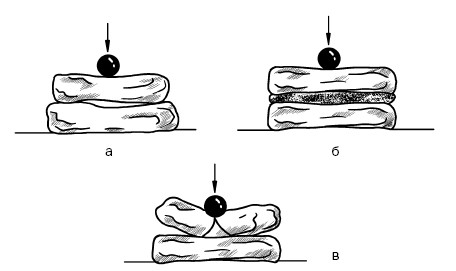
Рис. 17. Первое правило разрезки: а – передача нагрузки в двух точках; б – передача нагрузки на всю плоскость соприкосновения; в – излом камня
Укладывая камни, необходимо предотвратить их сдвиг. Если боковые грани камней расположены к горизонту под каким-либо углом, кроме прямого, то они превращаются в клинья, которые раздвинут камни и целостность кладки. Для недопущения этого необходимо, чтобы плоскости, отделяющие камни, располагались относительно постелей под углом 90°. Из этого следует второе правило разрезки: «массив кладки должен расчленяться вертикальными плоскостями (швами), параллельными наружной поверхности кладки (продольными швами), и плоскостями, перпендикулярными наружной поверхности (поперечными швами)» (рис. 18).
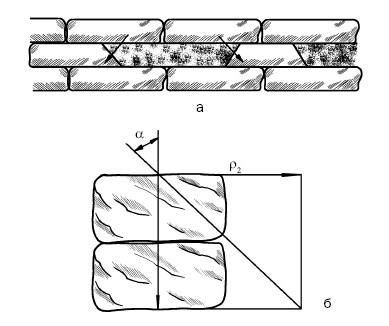
Рис. 18. Второе правило разрезки: а – кладка, расчлененная наклонными плоскостями; б – напряжения от наклонной нагрузки в кладке
Если продольные и поперечные вертикальные швы кладки окажутся сквозными (стена разбита на столбики), то вся конструкция станет неустойчивой, швы разойдутся, кладка разрушится. Поэтому необходимо, чтобы продольные и поперечные швы в смежных горизонтальных рядах перевязывались камнями следующего ряда, т. е. смещались на четверть или на половину длины относительно камней предыдущего ряда. Это означает, что под воздействием нагрузки напряжение, возникшее в массиве стены, распределится по всей кладке, а не по отдельному столбику. Третье правило разрезки требует, чтобы «плоскости вертикальной разрезки каждого ряда кладки были сдвинуты относительно плоскостей смежных с ним рядов» (рис. 19).
Чтобы разобраться в том, как ведется кладка кирпичной или каменной стены, необходимо выяснить ее элементы. Напомним, что у кирпича (или у прямоугольного камня) шесть граней: две противоположные большие – верхняя и нижняя постели; длинные боковые грани – ложки; две короткие – тычки. (Далее для простоты мы будем говорить о кладке кирпича, но это в равной степени относится и к камням.)
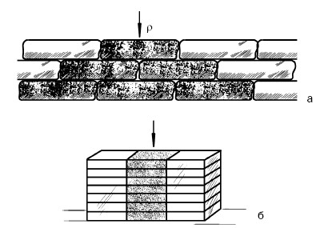
Рис. 19. Третье правило разрезки: а – кладка с перевязкой швов; б – кладка без перевязки швов
Кладка ведется горизонтальными рядами, и кирпичи укладываются плашмя, т. е. на постель. В отдельных случаях (при выполнении карнизов или устройстве перегородок в четверть кирпича), предусмотренных проектом, кирпич ставится на боковую ложковую грань, т. е. на ребро.
Поверхность кладки образуется двумя крайними рядами, которые называются верстами. Та из них, что обращена в сторону фасада, называется наружной, а ориентированная внутрь помещения – внутренней. Пространство между верстами называется забуткой и заполняется кирпичами, соответственно забутовочными.
Ряд кладки, направленный к наружной поверхности длинной боковой гранью, называется ложковым, а тот, что смотрит короткой гранью, тычковым. Сказанное проиллюстрировано рис. 20.
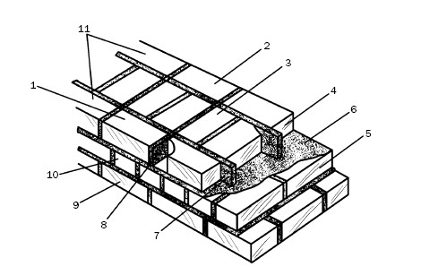
Рис. 20. Элементы кирпичной (каменной) кладки: 1 – наружная верста; 2 – внутренняя верста; 3 – забутка; 4 – второй ряд; 5 – первый ряд; 6 – горизонтальный шов; 7 – вертикальный продольный шов; 8 – вертикальный поперечный шов; 9 – фасад; 10 – тычковый ряд; 11 – ложковый ряд
Высота каждого горизонтального ряда формируется из высоты кирпича и толщины горизонтального шва, т. е. раствора, которая в пределах этажа в среднем равняется 10–12 мм.
Средняя толщина вертикальных рядов равна 10 мм, но в отдельных случаях может варьироваться в пределах 8–15 мм. Таким образом, высота рядов кладки составляет:
1) для одинарного кирпича – 77 мм (65 мм + 12 мм), т. е. 1 м кладки равен 13 рядам;
2) для утолщенного – 100 мм (88 мм + 12 мм), т. е. 1 м кладки равен 10 рядам.
Ширина кладки, которая называется толщиной стены, выполняется кратной / кирпича. Следовательно, кладка в 1 кирпич дает стену толщиной 250 мм; в 1 / кирпича – 380 мм; в 2 кирпича – 510 мм; в 2 / – 640 мм. Соответственно перегородки в / кирпича – 120 мм, в / кирпича – 65 мм (рис. 21).
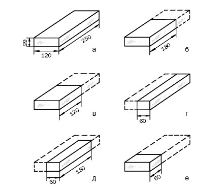
Рис. 21. Доли стандартного кирпича (размеры указаны в миллиметрах): а – целый; б – три четверти; в – половина; г – длинная половина; д – укороченная половина; е – четверть
Типы кладки кирпича представлены на рис. 22.
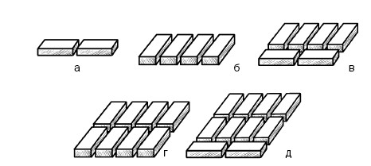
Рис. 22. Типы кладки: а – в / кирпича; б – в 1 кирпич; в – в 1 / кирпича; г – в 2 кирпича; д – в 2 / кирпич
В порядке информирования
Кирпичные (каменные) стены выполняются глухими и с проемами (оконными и дверными). Если первые называются гладкими, то вторые могут иметь напуски, пояски, уступы, обрезы, пилястры (рис. 23).
Напуск – это кладка, осуществляемая таким образом, при котором отдельный ее участок размещается не в плоскости предыдущих рядов, а выступает на лицевую поверхность. Как правило, напуск составляет не более трети длины кирпича в каждом ряду. Так выкладываются пояски, разделяющие фасад по высоте, карнизы и др. Обрез – это отступ от лицевой стороны очередного ряда кладки, т. е. выше него стена получается более тон кой, чем та, что ниже (так цоколь отграничивается от стены и др.). Перед обрезом выполняется тычковый ряд. Плоскость кладки, смещенная относительно плоскости основной стены, называется уступом. Пилястра – прямоугольный столб, выдвинутый из общей лицевой поверхности стены, но при этом сохранивший с ней перевязку швов.
Стена между рядом расположенными проемами называется простенком. Обычно они имеют вид прямоугольных столбов или прямоугольных столбов с четвертями, в которые вставляются оконные и дверные блоки. Чтобы выполнить четверть, из кладки надо выпустить наружные ложковые версты на / , а в тычковых верстах уложить четвертки (четвертинки кирпича). Кроме того, в стенах могут выполняться ниши, т. е. углубления, кратные половине кирпича; борозды для скрытых проводок, которые после их монтажа заделываются раствором на одном уровне с поверхностью стены.
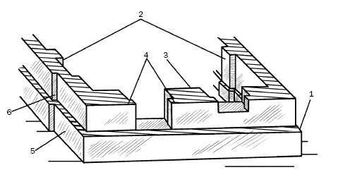
Рис. 23. Детали кирпичных (каменных) стеновых конструкций:
1 – обрез; 2 – пилястры; 3 – простенок; 4 – четверть; 5 – цоколь; 6 – уступ
Кирпичная кладка обладает такими физико-механическими свойствами, как прочность и плотность.
Прочность кладки определяется качеством кирпича и свойствами раствора. Предел прочности кирпичной кладки, даже если раствор является высокомарочным, составляет примерно 40–50 % предела прочности кирпича. Дело в том, что горизонтальные поверхности кирпича и раствора не бывают абсолютно плоскими, плотность и толщина растворного слоя также не всегда одинаковы по всей плоскости стены. Все это приводит к тому, что давление на кирпич на разных участках различно и неравномерно. Поэтому в кирпиче возникает напряжение и на сжатие, и на изгиб, и кладка разрушается еще до того, как сжимающие напряжения дойдут до предела прочности на сжатие.
При повышении нагрузки и доведении ее до большей, чем предел прочности кладки, величины кирпичи покрываются вертикальными трещинами, которые в основном располагаются под вертикальными швами, где сосредоточиваются напряжения растяжения и изгиба. Если и дальше повышать нагрузку, то трещины расширятся, а кладка распадется на отдельные столбики, которые постепенно теряют устойчивость, выдвигаются из плоскости стены (выпучиваются). В итоге кладка разрушается (рис. 24).
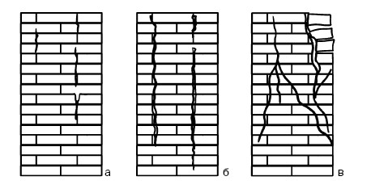
Рис. 24. Этапы разрушения кладки вследствие увеличения нагрузки: а – появление трещин; б – распадение кладки на столбики; в – выпучивание и разрушение стены
Раствор оказывает на прочность кладки непосредственное воздействие. Чем ниже его марка, тем легче он сжимается, значительнее деформация кладки, сильнее в каждом кирпиче напряжение изгиба и среза. Казалось бы, необходимо повысить марку раствора, и автоматически прочность кладки возрастет. Конечно, в этом случае прочность кладки повысится, но незначительно. В действительности важно такое свойство раствора, как пластичность. Чем пластичнее раствор, тем равномернее он распределяется по постели кирпича, тем более одинаковыми получаются толщина и плотность швов. В результате напряжение изгиба и среза в каждом кирпиче снижается, следовательно, прочность кладки увеличивается.
На прочность кладки оказывают влияние размеры и форма камня, если кладка ведется из него. Если камни высокие, то количество горизонтальных швов меньше, при этом сопротивление камня изгибу увеличивается пропорционально его высоте. Следовательно, при одинаковой прочности каменных материалов кладка из высоких камней будет прочнее.
Если камни имеют правильную форму, то и швы равномернее заполняются раствором, нагрузка от одного камня к другому сообщается лучше, они лучше перевязываются, соответственно, и прочность кладки повышается.
Качество самого шва имеет огромное значение: чем толще слой раствора, тем сложнее добиться его равномерной плотности, тем активнее кирпич работает на изгиб и срез; чем толще слой, тем сильнее деформация, тем менее прочна кладка. По этой причине каждый вид кладки выполняется с определенной толщиной шва. Увеличивать ее без риска понизить прочность конструкции нельзя.
От плотности кладки зависят ее огнестойкость, сопротивление природно-климатическим и химическим факторам, долговечность. Одновременно большая плотность повышает теплопроводность кладки. Поэтому наружные кирпичные стены выполняют более толстыми, чем диктуется требованиями прочности и устойчивости.
Однако при уменьшении плотности строительного материала за счет замены, например, керамического полнотелого кирпича на блоки из ячеистых бетонов, т. е. с 1800 до 800 кг/см , толщина стен становится меньше на 55 %, а их масса – на 80 %. Отсюда понятно, что пустотелые или пористые материалы, т. е. обладающие более низкой плотностью, чем полнотелые, но при этом имеющие хорошие теплотехнические характеристики, более выгодны.
В соответствии с правилами разрезки кладка кирпича осуществляется с перевязкой всех швов, а именно:
1) вертикальных, чтобы не допустить смещения камней под воздействием нагрузок;
2) продольных, чтобы кладка не распалась вдоль стены на более тонкие сегменты и напряжение в кирпичах распределялось равномерно;
3) поперечных, чтобы обеспечить продольные связи между кирпичами, от устойчивости которых зависит монолитность стен при температурно-влажностных перепадах и др.
В нашей стране в основном применяются три системы перевязки швов:
1) однорядная (или цепная);
2) многорядная;
3) трехрядная.
При кладке стен применяется однорядная система перевязки, при которой ложковые ряды перемежаются тычковыми. При этом поперечные швы в соседних рядах смещены относительно друг друга на / кирпича, а продольные – на / , поэтому вертикальные швы предыдущего ряда перекрываются кирпичами последующего ряда.
При многорядной перевязке кладка представляет собой стенки толщиной в / кирпича, которые выполнены из ложковых рядов и через определенное количество рядов по высоте перевязаны тычковым рядом. Количество этих рядов зависит от размера кирпича: для одинарного (65 мм) это 1 тычковый ряд на 6 рядов кладки; для утолщенного (88 мм) – 1 ряд на 4; для блоков и натурального камня правильной формы (200 мм) – 1 ряд на 3.
При многорядной перевязке кладки, выполняющейся из одинарного кирпича, продольные вертикальные швы через 5 ложковых рядов перекрываются тычковым, причем последние могут размещаться и в отдельных рядах, и в других рядах, чередуясь с ложковыми. При этом вертикальные швы в четырех ложковых рядах перекрываются ложками последующего ряда на / кирпича, а швы пятого ложкового ряда – тычковыми кирпичами шестого ряда на / . Подобная кладка именуется пятирядной.
При многорядной системе перевязки третий постулат разрезки кладки не выдерживается, т. е. на высоту 5 рядов отсутствует перевязка продольных швов. Это почти никак не отражается на прочности стены, а теплотехнические параметры кладки даже улучшаются в силу повышенного термического сопротивления этих швов.
Кладка наружных и внутренних верст относится к самым трудоемким операциям, при выполнении которых производительность труда каменщика зависит от выбранной системы перевязки. Если осуществляется многорядная перевязка швов при кладке в 2 кирпича, то количество кирпича, который должен быть уложен в забутку, уменьшается в 1,3 раза по сравнению с однорядной системой. Работа мастера облегчается прежде всего благодаря тому, что кладка ложковых кирпичей по причалке проводится быстрее, чем тычковых, поскольку в этом случае легче соблюдать точность перевязки, уменьшается количество поперечных швов, требующих внимательности и аккуратности.
При одинарной перевязке возникает необходимость в большом количестве трехчетверток (трехчетвертных кирпичей) для кладки углов, торцов стен, столбов. Если сравнить 1 м высоты угла стены в 2 кирпича, выполненного путем однорядной и многорядной перевязки швов, то окажется, что в первом случае понадобится 14 трехчетверток и 42 четвертки, а во втором – 4 и 12 соответственно, т. е. придется потратить больше времени на рубку кирпича, потери которого тоже возрастут.
Таким образом, для кладки стен рекомендуется многорядная система перевязки швов; при кладке стен из керамического кирпича с щелевидными пустотами – однорядная (рис. 25); столбов и простенков шириной до 1 м – трехрядная (о последней речь пойдет далее).
В порядке информирования
К качеству кладки предъявляются определенные требования, которые сформулированы в СНиПе 111-17-78 «Правила производства и приемки работ».
1. Кирпич и раствор должны соответствовать тем маркам, которые были приняты при разработке проекта дома.
2. В процессе кладки мастер должен следить, чтобы: а) перевязка швов осуществлялась правильно; б) не нарушались вертикальность, горизонтальность и прямолинейность поверхностей и углов; в) закладные детали и связи устанавливались с положенной периодичностью и в соответствии с правилами; г) качество швов, поверхностей кладки, т. е. рисунок, расшивка швов, подбор материала для лицевой поверхности (особенно в тех случаях, когда не предполагаются облицовка или оштукатуривание), оставалось высоким.
3. При осуществлении работ в жаркую или ветреную погоду кирпич надо увлажнять, так как это улучшает адгезию между раствором и кирпичом.
4. Если в процессе кладки предполагается перерыв, то не следует на верхний ряд расстилать раствор. При возобновлении работы надо сначала смочить поверхность предыдущего ряда, а потом приступать к кладке последующего. Это особенно важно, если строительство ведется в сейсмоопасных районах или с использованием цементных вяжущих. Если кирпич оставить сухим, то он впитает влагу из раствора и ухудшит его качество и прочность.
5. Во время кладки необходимо не менее двух раз на каждом ярусе проверять горизонтальность рядов, с такой же периодичностью контролировать их прямоугольность и вертикальность, применяя угольник, уровень, отвес. При обнаружении значительных отклонений от осей конструкции их надо исправить. Если отклонения находятся в пределах допусков, то они могут устраняться в уровнях междуэтажных перекрытий.
6. Толщина швов также должна находиться под пристальным вниманием и измеряться через 5–6 рядов кладки. Кроме того, не менее трех раз на этаж следует проверить, насколько правильно заполняются швы. Для этого в нескольких местах достаточно вынуть отдельные кирпичи только что законченного ряда.
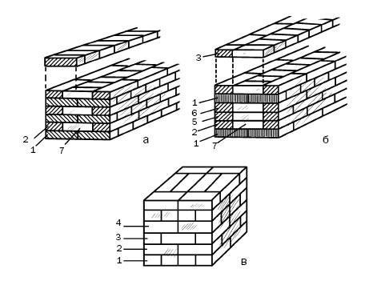
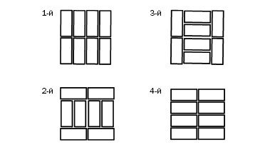
Рис. 25. Система перевязки швов: а – однорядная; б – многорядная; 1 – тычковый ряд; 2–6 – ложковые ряды; 7 – забутка; в – трехрядная (столб сечением 2 x 2 кирпича)
Возведение кирпичной стены осуществляется в такой последовательности:
1) установка порядовок;
2) натягивание причалок;
3) раскладка кирпича на стене;
4) перелопачивание раствора;
5) подача раствора и его расстилание для наружной, потом для внутренней версты, под забутку;
6) кладка кирпича;
7) проверка правильности готового ряда.
Поскольку о том, как зафиксировать порядовку и натянуть шнур-причалку, мы уже говорили, то сразу перейдем к раскладке кирпича на стене, тем более что от этого в немалой степени зависит производительность труда и соответственно скорость строительства.
За многие годы, в течение которых в строительстве используются кирпич и камни, сложились определенные приемы для выполнения кладки. Прежде всего кирпич должен располагаться максимально близко к тому месту, где осуществляется работа. Для ложковых рядов принято расставлять материал параллельно стене или под некоторым углом к ней, для тычковых – перпендикулярно; для наружной версты – на внутренней половине стены, для внутренней – наоборот. Постель при этом остается свободной от кирпича. Кроме того, имеет значение и толщина стены:
1) на кладке шириной в 2 кирпича и более для тычковых наружных верст материал раскладывается стопками по 2 штуки под углом 90° к оси стены с интервалом в / кирпича или под углом 45° к оси стены; для ложковых наружных верст – стопками по 2 кирпича параллельно оси стены или под углом 45° и интервалом в 1 кирпич (рис. 26);
2) на кладке шириной в 1 / кирпича для тычкового ряда материал размещается стопками по 2 кирпича параллельно оси стены и интервалом в / кирпича между ними; для ложкового ряда – такими же стопками, но промежуток между ними возрастает до 1 кирпича;
3) на кладке шириной в 1 кирпич для ложкового ряда материал раскладывается посередине стены стопками по 2 кирпича параллельно ее оси и интервалов между ними в 1 кирпич; для тычкового ряда – на том же месте, но перпендикулярно оси стены и промежутком между стопками в / кирпича;
4) для кладки шириной в / кирпича материал располагается параллельно оси стены один за другим.
Чтобы было удобно расстилать на постель раствор и перемещать кирпич к месту кладки с минимальным количеством движений, он раскладывается на стене в 50–60 см от места работы. При этом необходимо следить за тем, чтобы сторона, ориентированная на фасад постройки, не имела никаких дефектов.
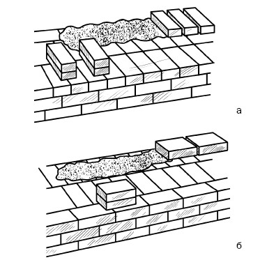
Рис. 26. Раскладка кирпича при выполнении наружных верст;
а – тычковой; б – ложковой
В кирпичной кладке примерно четверть ее объема приходится на раствор, который готовится на строительной площадке или доставляется в машине, оборудованной миксером. К месту кладки раствор подается на носилках или ведрами и выкладывается в растворный ящик.
Чтобы качество кладки было высоким, необходимо равномерно распределять раствор по постели. Большое значение имеют и свойства самого раствора, поскольку от его пластичности зависит, как он ляжет на постель. Если известковые и сложные растворы отличаются хорошей пластичностью и поэтому без труда расстилаются, разравниваются и равномерно уплотняются в процессе кладки кирпича, то, например, о цементных растворах этого сказать нельзя. Они имеют меньшую пластичность, плохо распределяются на постели. Поэтому в них еще на стадии приготовления вводятся пластификаторы, повышающие эластичность раствора, замедляющие его расслаивание. Кроме того, ложась на пористое основание, они плохо отдают воду, и поэтому вяжущее в их составе твердеет в нормальные сроки.
Раствор подается на стену и расстилается по постели растворной лопатой, перед этим обязательно перемешивается, что препятствует его расслоению и ухудшению качества кладки, причем для ложковой версты раствор выкладывается через боковую грань лопаты грядкой шириной 80–100 мм, для тычковых рядов – через передний край лопаты и грядкой шириной 200–250 мм, после чего каменщик с помощью кельмы расстилает растворную постель (рис. 27).
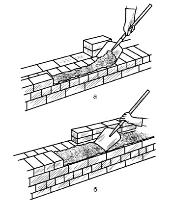
Рис. 27. Подача раствора: а – для ложкового ряда; б – для тычкового ряда
Толщина грядки в среднем не превышает 20–25 мм, что позволяет при укладке кирпича соблюдать толщину раствора на уровне 10–12 мм. Имеет значение и то, как выполняется кладка, впустошовку или с заполнением: в первом случае раствор не должен доходить до края стены на 20–30 мм, во втором – на 10–15 мм.
Когда выкладываются столбы размером не более 3 x 4 кирпича, то раствор подается на его середину, при больших размерах все осуществляется так же, как при кладке стены.
В порядке информирования
Еще на стадии проектирования фундамента необходимо иметь представление о том, сколько приблизительно будет весить все строение. Это можно установить, если определить объем материалов, из которых будет построен дом. Объем кирпичной кладки можно рассчитать следующим образом. Предположим, что в плане дом при высоте 6 м имеет размеры 10 x 10 м, при этом стены выкладываются в 2 кирпича.
1. Найдите периметр дома: 10 м x 4 = 40 м.
2. Определите площадь стен: 40 м x 6 м = 240 м .
3. По табл. 6 установите, какое количество кирпича потребуется на 1 м стены. В данном примере – 204 шт.
4. Вычислите расход кирпича: 204 шт. x 240 м = 48 960 шт.
5. Если один кирпич весит не более 4,3 кг, то общая масса стеновой конструкции составит: 4,3 кг x 48 960 шт. = 210 528 кг. Конечно, говорить об абсолютной точности расчетов не приходится, поскольку вес раствора, который пойдет на кладку такого количества кирпича, не учитывается. Тем не менее некоторое представление об этом вы получите. Кроме того, сможете узнать, какое количество кирпича необходимо приобрести, а зная цену одного кирпича, – и сумму предстоящих расходов.
Скорость, с которой работает каменщик, и производительность его труда во многом определяются способами кладки и умением применять их при использовании разных растворов. Кладка верст осуществляется тремя способами:
Таблица 6
Расход кирпича на 1 м кладки
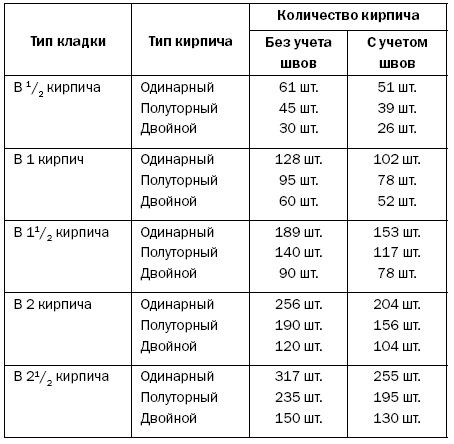
1) вприжим;
2) вприсык;
3) вприсык с подрезкой.
Забутка выполняется способом вполуприсык.
При работе с жестким раствором (осадка эталонного конуса составляет 7–9 см) с заполнением и расшивкой швов ложковые и тычковые ряды укладываются вприжим. Каменщик с помощью кельмы расстилает и разравнивает раствор, готовя постель сразу для 3 ложковых (рис. 28) или 5 тычковых кирпичей (рис. 29).
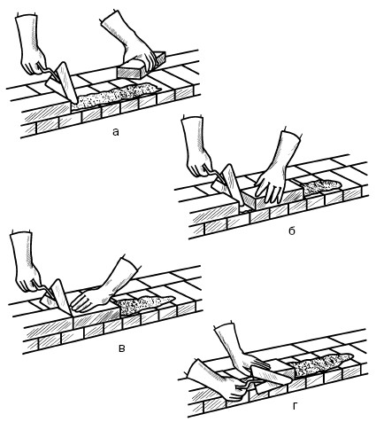
Рис. 28. Последовательность кладки ложкового ряда наружной версты способом вприжим: а-г – этапы работы
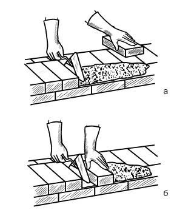
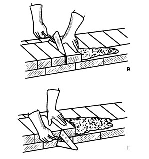
Рис. 29. Последовательность кладки тычкового ряда наружной версты способом вприжим: а-г – этапы работы
При выполнении кладки мастер действует следующим образом (чтобы были ясно видны приемы хватки кирпича, на рисунках его руки изображены без рукавиц):
1) кельмой, которую он держит в правой руке, каменщик разравнивает раствор; потом ребром кельмы небольшую его часть подгребает, прижимает к вертикальной грани уже уложенного кирпича и придерживает его кельмой. Одновременно левой рукой берет и подносит новый кирпич;
2) положив кирпич на постель, мастер перемещает его левой рукой в направлении к уложенному кирпичу и прижимает новый кирпич к полотну кельмы;
3) далее каменщик вынимает кельму движением вверх, и в этот момент новый кирпич зажимает раствор между вертикальными гранями уложенного и укладываемого кирпичей;
4) далее, нажимая на кирпич, мастер осаживает его. Уложив таким образом 4–5 тычков или 2 ложка, он разом подрезает кельмой излишек раствора, который выступил из шва, и сбрасывает его на постель.
Кладка, которая ведется таким способом, отличается не только прочностью, плотностью и чистотой, но и значительной трудоемкостью, поскольку каменщик делает много движений.
При кладке впустошовку и использовании пластичного раствора (осадка конуса составляет 12–13 см) применяется способ вприсык (рис. 30, 31).
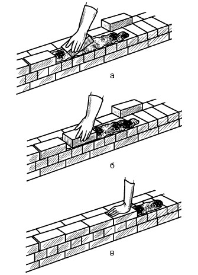
Рис. 30. Последовательность кладки ложкового ряда способом вприсык: а-в – этапы работы
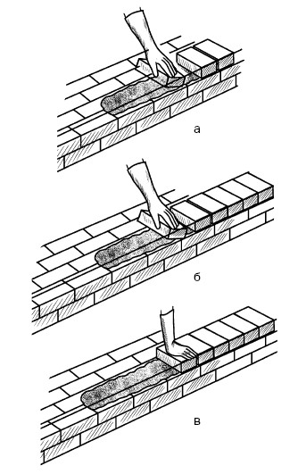
Рис. 31. Последовательность кладки тычкового ряда способом вприсык: а-в – этапы работы
При выполнении ложкового ряда каменщик совершает следующие действия:
1) удерживая кирпич немного наклонно в левой или правой руке на расстоянии примерно 8–12 см от уложенного кирпича, мастер захватывает тычковой гранью небольшую часть расстеленного раствора;
2) каменщик начинает придвигать новый кирпич к уложенному, выравнивает его и прижимает к постели;
3) часть раствора, которая была захвачена с постели, заполняет вертикальный поперечный шов. После этого мастер осаживает кирпич.
Кладка тычкового ряда отличается от описанного только тем, что раствор для вертикального поперечного шва захватывается и подгребается ложковой гранью нового кирпича.
При кладке стен с заполнением горизонтальных и вертикальных швов и их расшивкой прибегают к способу вприсык с подрезкой раствора (рис. 32).

Рис. 32. Последовательность кладки тычкового ряда способом вприсык с подрезкой раствора: а-в – этапы работы
При этом способе раствор (подвижность его 10–12 см; если будет более пластичным, то мастер не сможет вовремя подрезать раствор, и тот будет загрязнять лицевую сторону стены) расстилается на расстоянии 10–15 мм от лицевой стороны кладки, т. е. так же, как при выполнении способа вприжим, а кирпич укладывается так же, как при применении способа вприсык. Отличительной особенностью этого способа кладки является то, что на него уходит больше времени и труда, чем на первый, но меньше, чем на второй способ – вприсык и вприжим соответственно.
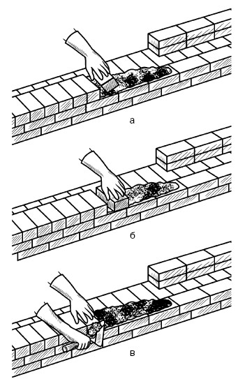
Рис. 33. Последовательность кладки тычкового ряда способом вполуприсык: а-б – этапы работы
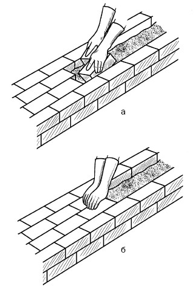
Рис. 34. Последовательность кладки ложкового ряда способом вполуприсык: а-б – этапы работы
Для заполнения забутки используется способ вполуприсык (рис. 33, 34).
После того как выполнены наружная и внутренняя версты, между ними каменщик расстилает постель, разравнивает и заполняет забутку, беря сразу обеими руками по одному кирпичу:
1) мастер держит кирпичи практически плашмя на расстоянии 6–8 см от уложенных, кладет их на раствор, загребая его часть ребрами кирпичей;
2) потом приближает кирпич почти вплотную к уложенному и, нажав, осаживает его. При этом вертикальные и поперечные швы заполняются не полностью, но это устраняется при расстилании раствора для очередного ряда.
В порядке информирования
Стены (и наружные, и внутренние) – это важный элемент конструкции здания. На их возведение уходит примерно 30 % общей стоимости постройки, а вес составляет приблизительно 50 %.
В соответствии с конструкцией дома стены подразделяются на несущие и самонесущие. Сплошные (глухие) несущие наружные стены выполняют две функции: воспринимают нагрузку и играют роль ограждающей конструкции. Поэтому толщина стен (табл. 7) устанавливается в порядке прочностных и теплотехнических расчетов, при этом учитываются их конструкция и расчетная зимняя температура (как правило, берется средняя температура самой холодной пятидневки года). Минимальная толщина стен определяется при условии, что при расчетной зимней температуре и функционирующем отоплении в жилой части дома будет поддерживаться температура не менее 18 °C.
Толщина стен неотапливающихся помещений, но примыкающих к обогреваемым, должна составлять 0,7 толщины наружных стен.
Толщина внутренних стен должна быть такой, чтобы обеспечивать прочность, звуко– и шумоизоляцию. Естественно, имеет значение и себестоимость строительства (например, стены из легких бетонов обходятся в 1,5–2 раза дешевле, чем кирпичные).
Таблица 7
Толщина наружных стен в зависимости от прочностных характеристик материалов и зимних температурных условий
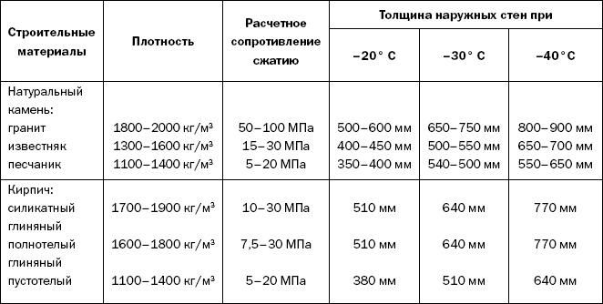
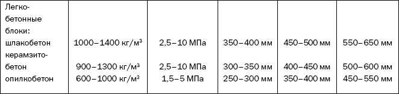
Чтобы подчеркнуть геометричность кладки и придать ей четкость, вертикальные и горизонтальные швы (в этом случае они полностью заполняются раствором, который в процессе кладки подрезается) расшиваются специальными инструментами, причем это нужно сделать до того, как раствор схватится. В соответствии с формой расшивки швы могут получиться закругленными, выпуклыми, вогнутыми и пр. (рис. 35).
При этом мастер придерживается следующей методики (рис. 36):
1) очищает поверхность стены от раствора, тщательно протирая его тряпкой или щеткой (набрызгов не избежать, даже если вы работаете очень аккуратно);
2) расшивает вертикальные швы на 6–8 тычковых рядов или на 3–4 ложковых;
3) расшивает горизонтальные швы.
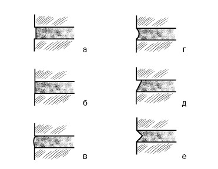
Рис. 35. Форма, придаваемая швам при расшивке:
а – прямоугольная заглубленная; б – прямоугольная вподрезку; в – выпуклая; г – вогнутая; д – односрезная; е – двухсрезная
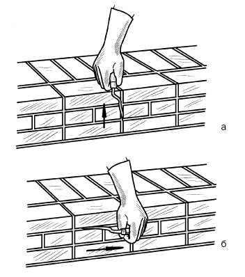
Рис. 36. Расшивка швов: а – вертикальных; б – горизонтальных
В процессе кладки все действия выполняются в определенной последовательности. Сначала выкладывается наружная верста, причем независимо от того, какой элемент или конструкция выполняется (стена, напуск, столб, обрез) и какая система перевязки швов используется, кладка начинается и заканчивается тычковым рядом. Существуют следующие способы кладки:
1) порядный;
2) ступенчатый;
3) смешанный.
Самым простым, но одновременно и наиболее трудоемким является порядный способ (рис. 37), который чаще всего применяется при однорядной системе перевязки швов. При его выполнении каждый последующий ряд выкладывается только после того, как уложены версты и забутка предыдущего.
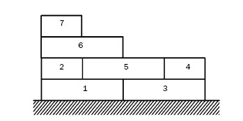
Рис. 37. Порядный способ кладки
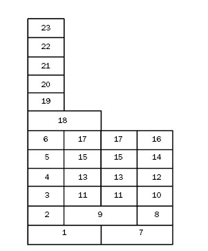
Рис. 38. Ступенчатый способ кладки
При использовании ступенчатого способа (рис. 38) в первую очередь выполняется тычковая верста первого ряда, на ней поднимаются 2–6 рядов ложковой версты, потом внутренняя тычковая верста и 5 рядов внутренней версты, после чего заполняется забутка. Высота ступени не должна превышать 6 рядов. Этот способ применяется при многорядной системе перевязки швов.
Смешанный способ кладки (рис. 39) также используется при многорядной системе перевязки швов, при этом первые 7–9 рядов кладутся порядным способом (примерно до 60–100 см), начиная с 8–11 ряда, каменщик переходит на ступенчатый способ кладки, поскольку придерживаться первого становится сложнее, особенно если выполняется стена толщиной в 2 и более кирпичей.
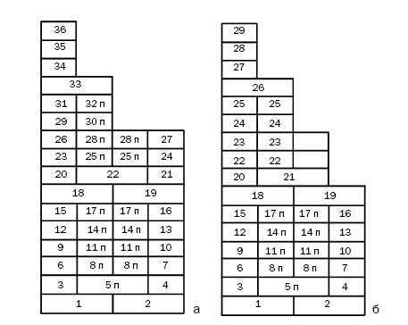
Рис. 39. Смешанный способ кладки: а – вариант 1; б – вариант 2
При выполнении кладки требуются не только целые кирпичи, но и его части, т. е. неполномерные кирпичи: четвертки, половинки, трехчетвертки (рис. 40), которые укладываются для перевязки швов при кладке простенков, столбов, на участках примыкания и пересечения стен и др.
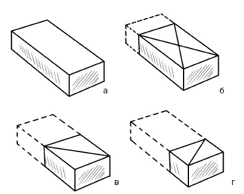
Рис. 40. Кирпичи (линиями показаны принятые их условные обозначения): а – полномерный кирпич; б – трехчетвертка; в – половинка; г – четвертка
Понятно, что такие кирпичи не производятся, их готовит каменщик непосредственно при возникновении такой необходимости. Для этого подходят кирпичи с дефектами, например с отколотыми краями. В процессе кладки данные кирпичи кладут так, чтобы отколотая сторона смотрела внутрь ряда.
Профессионал должен знать, какой неполномерный кирпич ему понадобится в том или ином случае, и уметь правильно его обрубить. Если допущена ошибка, то перевязка швов нарушается, что влечет за собой увеличение количества раствора, негативно сказывающееся на прочностных характеристиках кладки.
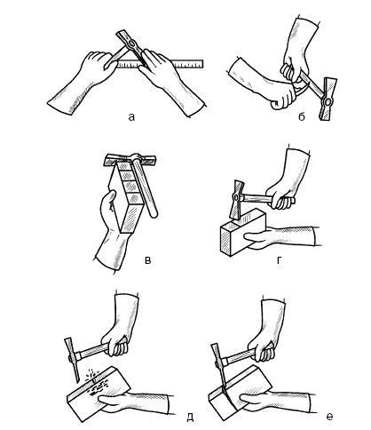
Рис. 41. Последовательность приемов при рубке трехчетвертки: а-е – этапы работы
Приемы, которыми должен владеть каменщик, показаны на рис. 41.
1. Он отмеряет соответствующую длину неполномерного кирпича, в частности трехчетвертки.
2. Делает насечку на рукоятке молотка-кирочки.
3. Откладывает на плоскости кирпича необходимую длину.
4. Намечает линию рубки молотком-кирочкой.
5. Надсекает кирпич с обеих ложковых сторон.
6. Одним ударом обрубает кирпич по линии раз метки.
Во время рубки кирпича каменщик следит за тем, чтобы удар молотка-кирочки был направлен строго под углом 90° к ложку, иначе торец получится скошенным.
Если требуется расколоть кирпич вдоль, то сначала мастер простукивает его легкими ударами по четырем плоскостям, потом одним ударом обрубает по намеченной линии. Вместо молотка можно воспользоваться и ребром кельмы.
В порядке информирования
Построить действительно добротный дом трудно, тем более что при этом неизбежны разные проблемы и случайности. Самое главное – чтобы не было критических ошибок, следствием которых может стать потеря устойчивости и целостности самой постройки. Просчеты при строительстве возникают по вине застройщика, подрядчика, проектировщика. Последний как никто другой несет ответственность за правильность предложенных решений. Но нельзя исключать и ошибки застройщика, который должен следить (если эти вопросы берет на себя) за тем, чтобы все технологические требования выполнялись, тем более что он финансирует всю выполняемую работу. Но нередко именно застройщик оказывается слабым звеном в этой цепочке, самонадеянно принимая какие-либо решения, не считаясь с мнением профессионалов.
Конечно, не будем утверждать, что все, без исключения, ошибки роковые. Например, этого нельзя сказать о недочетах при отделке. Их можно исправить, естественно, потратив определенную сумму денег, или просто эксплуатировать дом, закрыв глаза на небольшие изъяны.
Более серьезными являются ошибки, допущенные при возведении фундамента, стен, результатом которых может быть признание дома аварийным. Иногда случается, что ошибка осталась незамеченной и ее последствия проявились позднее. В таких случаях исправление обойдется намного дороже. Опаснее всего строить дом, не продумав и не разработав проект, без которого невозможно осуществить привязку к местности. Это ошибка, которую невозможно исправить. Кроме того, обязательно должны быть выполнены санитарные и противопожарные разрывы между постройками на участке; определена наилучшая отметка первого этажа по отношению к уровню участка; обеспечено достаточное поступление в жилые комнаты солнечного света и пр.
Помимо названных, наиболее распространенными являются следующие ошибки:
1) пренебрежение геодезической экспертизой;
2) использование некачественного материала;
3) некомпетентность застройщика (и строителей, если они привлекаются) в вопросах технологических свойств материалов и конструкций;
4) недооценка воздействия на конструкции влаги;
5) человеческий фактор.
Ошибки совершаются на всех стадиях строительства: при заложении фундамента, выполнении перекрытий и устройстве кровли. Мы сейчас отметим только те, которые встречаются при возведении стен.
1. Оставление стен из газобетона или ракушечника без армирования. Поскольку эти строительные материалы недостаточно прочны на изгиб, то под воздействием нагрузок, например железобетонных плит перекрытия, они постепенно могут деформироваться, и в результате стены начнут трескаться. Чтобы справиться с возникшей проблемой, необходимо отметить маяками появившиеся дефекты и после консультации специалиста провести усиление конструкции. Если трещины не меняют своего размера, то их можно устранить, заделав соответствующим раствором. Но правильнее всего было бы на стадии строительства устроить по цоколю и периметру стен монолитный пояс из железобетона, а также армировать протяженные стены, перемычки и периметр вокруг оконных и дверных проемов.
2. Разные участки стен выполнены из материалов, обладающих неодинаковыми показателями теплопроводности. Такое случается, если, например, перемежать стены из газобетона или керамических камней вставками, выложенными из кирпича или бетонных блоков, у которых теплопроводность выше. Поэтому на них будет оседать конденсат, и конструкция начнет намокать. Чтобы устранить такой дефект, необходимо утеплить более теплопроводные участки снаружи и довести их показатели до уровня остальной стены. Лучше вообще не комбинировать разные материалы без крайней необходимости. Элементы с повышенной теплопроводностью и низкой паропроницаемостью надо располагать с внутренней стороны стены, а с внешней монтировать, например, вентилируемый фасад.
3. Слабые связи между несущей и облицовочной стенами. Это со временем приведет к обрушению облицовки. Единственный выход – выполнить отделку заново. Но такой необходимости не возникнет, если на стадии строительства соединить обе стены анкерами.
4. Причин, по которым могут намокать стены, много, в частности дефекты в гидроизоляции или ее отсутствие, ошибки при выполнении теплотехнического расчета стен, нарушения строительной технологии, ошибки при устройстве водостока, протечки кровли и др. Одни из них можно без особых проблем устранить в уже построенном доме, другие потребуют больших расходов.
5. Нарушение технологии строительства стен. Основное требование к конструкциям заключается в необходимости соблюдать строгую вертикальность, геометрию, жестко связывать наружные и внутренние несущие элементы. Важно, чтобы все проемы имели перемычки, которые принимали бы нагрузку от вышележащих конструкций. Не следует допускать увлажнения стен, причем опаснее всего не осадки в виде дождя или снега, а капиллярная влага, поднимающаяся из грунта, и пар, проникающий изнутри помещения, охлаждающийся и конденсирующийся в толще стены. В первом случае поможет эффективная гидроизоляция, во втором – защита от пара или его отведение.
6. Труднее всего возводить многослойные стены, основные проблемы возникают на стыках. Поскольку материалы имеют разные коэффициенты теплового расширения, показатели теплопроводности и паропроницаемости, то на таких участках может аккумулироваться влага, что в конечном итоге приведет к расслоению конструкции. Поэтому важно правильно подбирать и соединять материалы, так как от этого зависит не только энергосбережение, но и прочность самой стены.
Возведение кирпичной стены начинается с установки порядовок, которые размещаются по периметру стен (по углам, в местах примыкания и пересечения стен, на длинных участках с интервалом 10–15 м одна от другой), контролируются по отвесу, чтобы засечки для каждого ряда оказались в одной плоскости.
К порядовкам прикрепляется шнур-причалка. При выполнении наружных верст причалка натягивается для каждого ряда на уровне верхней постели, с отступом от вертикальной плоскости кладки на 3–4 мм.
Дополнительно контролировать кладку помогут маяки в виде убежной штрабы (рис. 42), которые кладутся на углах или на промежуточной сплошной стене, чтобы ориентироваться по ним и вести кладку.
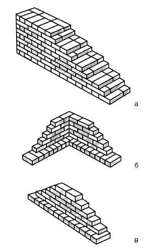
Рис. 42. Штрабы: а – убежная; б – убежная угловая; в – убежная промежуточная
Есть разные способы закрепить причалку, например причальной скобой, один конец которой помещается в шов кладки, а к другому (более длинному и тупому) привязывается шнур.
У скобы есть специальная ручка, на которую наматывается его свободный конец. Когда нужно переставить скобу в другое место, ее нужно просто повернуть. При другом способе фиксации шнура его следует привязать двойной петлей к гвоздям, заложенным в швы кладки (рис. 43).
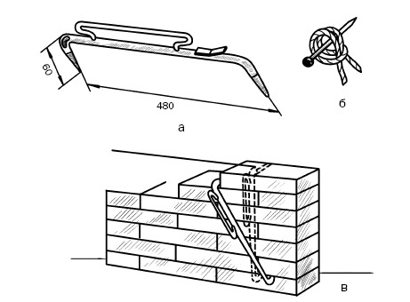
Рис. 43. Закрепление и перестановка шнура-причалки (размеры указаны в миллиметрах): а – причальной скобой; б – двойной петлей; в – перестановка скобы
По окончании подготовительного этапа, когда установлены порядовки, выполнены маяки, привязан шнур, необходимо разложить на стене кирпич, расстелить раствор под наружную версту и начать ее выкладывать одним из способов: порядным, ступенчатым или смешанным. Но есть общие правила кладки, которые нужно соблюдать независимо от выбранного способа.
1. И стены, и простенки выполняются по одной системе перевязки швов: одно– или многорядной.
2. Трехрядную систему допускается использовать при выполнении простенков шириной менее 1 м, столбов, стен, которые будут отделываться.
3. При любой системе перевязки швов тычковые ряды в первом и последнем рядах, на уровне столбов и обрезов стен, в карнизах и поясках выкладываются только из полномерных кирпичей.
4. При многорядной системе под опорными частями балок, плит перекрытий, балконов и других сборных конструкций в обязательном порядке выполняйте тычковые ряды. При применении однорядной системы перевязки швов в таких случаях допускаются ложковые ряды.
5. При наличии половинок кирпича их можно использовать только в качестве забутовочных или на таких участках стены, на которые не будет оказываться серьезная нагрузка, например под оконными проемами.
6. За исключением кладки впустошовку, все горизонтальные, поперечные вертикальные швы в стенах; горизонтальные, поперечные и продольные вертикальные в перемычках и столбах надо заполнить раствором.
Рассмотрим особенности кладки при однорядной системе перевязки швов. Если на толщину приходится нечетное количество полукирпичей, например 1 / , то первую наружную версту первого ряда выполняйте тычками, вторую ложками; если количество полукирпичей четное, например 2, то в первом ряду по всей ширине стены выложите тычки, во втором ряду версту – ложками, забутку – тычками. При более толстой стене в верстах во втором ряду тычки чередуются с ложками, а ложки с тычками, забутка заполняется тычковыми кирпичами (рис. 44).
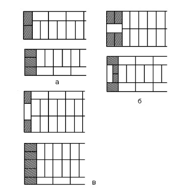
Рис. 44. Однорядная система перевязки швов при выполнении стены толщиной: а – в 1 / кирпича; б – в 2 кирпича; в – в 2 / кирпича
Чтобы получить ровный обрез стены по вертикальной плоскости, т. е. выполнить вертикальное ограничение, в начале стены укладываются трехчетвертки. Это не относится к стене толщиной в / кирпича, в ее начале кладутся половинки, что повторяется через 1 ряд. При толщине стены в 1 кирпич для вертикального ограничения в ложковом ряду в начале стены продольно кладутся 2 трехчетвертки, а в тычковом ряду полномерный кирпич.
При толщине стены в 1 / кирпича в начале стены в тычковом ряду в поперечном направлении надо положить две трехчетвертки, в ложковом ряду три трехчетвертки. Далее по рис. 44 понятно, каким образом выкладывать вертикальное ограничение стены при ее толщине в 2 и 2 / кирпича.
Особенно ответственно следует подходить к выполнению углов, кладку которых можно выполнять в соответствии с разными схемами. Одна из них показана на рис. 45.
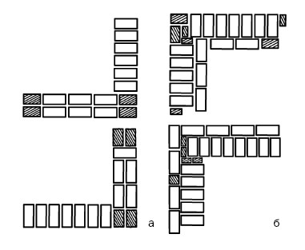
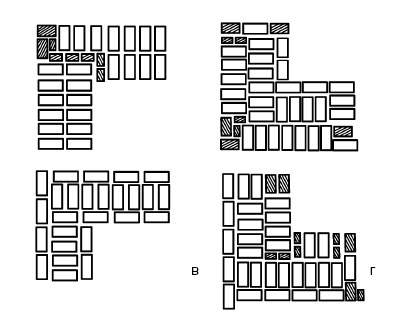
Рис. 45. Однорядная система перевязки швов при выполнении
прямого угла и ограничения стен с четвертью при толщине: а – в 1 кирпич; б – в 1 / кирпича; в – в 2 кирпича; г – в 2 / кирпича
При возведении стен они могут примыкать друг к другу или пересекаться. Выполнение примыкания стен наглядно продемонстрировано на рис. 46.
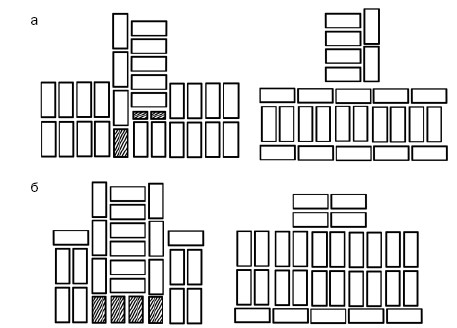
Рис. 46. Однорядная система перевязки швов при выполнении примыкания стен толщиной: а – в 11/2 кирпича; б – в 2 кирпича
Примыкание стен можно выложить по-разному:
1) если для соблюдения перевязки используются трехчетвертки и четвертки, то при толщине стены в 1 / кирпича в первом ряду примыкающая стена пропускается через основную до ее лицевой поверхности, и ряд завершается тычковыми кирпичами и трехчетвертками;
2) при тех же условиях, но при толщине стены в 2 кирпича примыкающая стена пропускается через основную, и ряд завершается исключительно трехчетвертками.
В очередном, втором ряду к ложкам основной стены примкнет ряд примыкающей стены. Чтобы оформить пересечение стен (рис. 47), поочередно ряды стен пропускаются друг через друга.
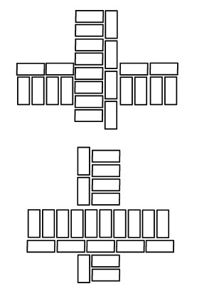
Рис. 47. Однорядная система перевязки швов при выполнении пересечения стен
В порядке информирования
В последние годы разрабатываются и внедряются новые конструкции стен, в которых могут быть использованы современные теплоизоляционные материалы, что позволяет уменьшить нагрузку на фундамент и основание под ним. Например, весьма эффективна кирпичная стена с воздушной прослойкой, ширина которой составляет 6–9 см. Кладка ведется и из полно-, и из пустотелого кирпича. Тычковые ряды, чередующиеся с пятью ложковыми, через каждые 5–6 рядов могут замещаться металлической арматурой, что дает возможность сэкономить 20 % кирпича без потери ограждающей конструкцией своей прочности. Безусловно, все работы должны проводиться в соответствии с проектом и теплотехническим расчетом, которые укажут не только толщину стены, но и материалы, необходимые для той или иной конструкции.
Применение новых технологий и современных теплоизоляционных материалов во многом облегчает процесс кирпичной кладки, потому что утепление можно проводить не одновременно с возведением стен, а после него, во вторую очередь. Для внутреннего утепления используются фибролит, термоблоки, изготовленные из легкого бетона, для наружного рекомендуются минеральная вата, пенополистирол и др. При выполнении кладки необходимо строго следить за соблюдением всех требований, которые к ней предъявляются. Качественная кладка возможна только при условии, что застройщик, осуществляющий строительство собственными силами (даже если не кладет стены, он должен обладать определенными знаниями, чтобы контролировать этот процесс), или каменщики ориентируются в вопросах, связанных с видами растворов, стеновых материалов и пр. О качестве кладки можно судить по таким признакам:
1) должна быть соблюдена перевязка швов, выдерживаться их вертикальность и горизонтальность;
2) выполнены требования к прямоугольности углов и толщине швов;
3) ось кладки совпадает с осью конструкции.
При многорядной системе перевязки швов первый ряд выкладывается тычками. Если толщина стен кратна целому кирпичу, то обе версты второго ряда выполняются ложками, а забутка заполняется тычками. При кратности толщины стены нечетному количеству кирпичей при кладке первого ряда тычки ориентируются на фасад, а ложки внутрь, во втором ряду наоборот; с третьего по шестой ряды выкладываются только ложки, с перевязкой вертикальных поперечных швов либо на половину, либо на четверть кирпича (рис. 48).
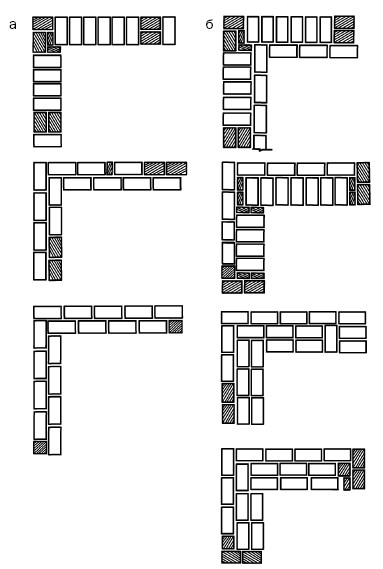
Рис. 48. Многорядная система перевязки швов при выполнении стен толщиной: а – в 1 кирпич; б – в 1 / кирпича
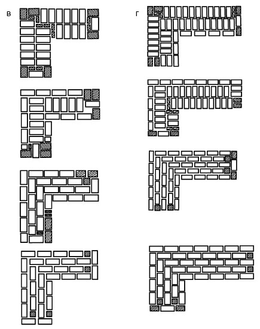
Рис. 48 (продолжение). Многорядная система перевязки швов при
выполнении стен толщиной: в – в 2 кирпича; г – в 2 / кирпича
При наличии половинок кирпича их можно использовать для заполнения забутки при выкладывании малонагруженных участков стены и в каркасной постройке.
Чтобы выложить вертикальное ограничение стены, в начале и конце первых двух рядов используются трехчетвертки, в других ложковых рядах у ограничений неполномерные кирпичи перемежаются с целыми, при этом последние кладутся таким образом, чтобы одни ложки перекрывали другие на / кирпича. При выполнении перевязок швов надо ориентироваться на рис. 48.
Чтобы выложить пересечение стен (рис. 49), тычковые ряды одной стены смещаются на / кирпича от лицевой поверхности другой стены и открывшийся промежуток заполняется четвертками. Далее тычковые ряды обеих стен перевязываются смежными ложковыми рядами на / или / кирпича. При такой системе ложковые ряды не пересекают стену, а как бы проникают в нее на / кирпича.
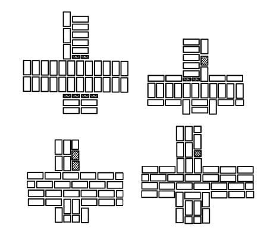
Рис. 49. Многорядная система перевязки швов при выполнении пересечения стен толщиной в 1 / и 2 кирпича стеной в 2 кирпича
Методика выполнения примыкания стен не отличается от кладки пересечения стен. Если внутренние стены возводятся не одновременно с наружными, то примыкание можно выложить в виде вертикальной штрабы (одно– или многорядной) (рис. 50).
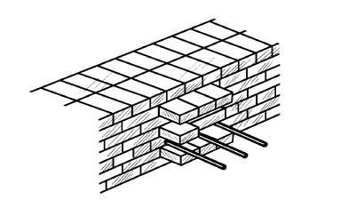
Рис. 50. Вертикальная штраба в месте примыкания другой стены
Для усиления связи стен в наружные стены закладываются арматурные прутки (диаметр 8 мм, длина, как минимум, 1 м от угла примыкания и завершаются анкером), которые размещаются не менее чем через 2 м по высоте кладки и на уровне каждого перекрытия.
Нередко толщина кирпича, из которого выкладывается наружная стена, отличается от толщины кирпича, предназначенного для выполнения внутренней стены. Например, первая может выполняться из керамического кирпича (65 мм) или керамических камней (138 мм), а вторые – из утолщенного керамического кирпича (88 мм). Чтобы выполнить примыкание, через каждые 3 ряда внутренней стены нужно перевязывать ее с наружной. Внутренние стены толщиной в / или в 1 кирпич поднимаются после того, как возведены наружные, в которых для этого предусматривается специальный паз, куда и встраивается внутренняя стена. При отсутствии каких-либо указаний в проекте паз имеет глубину в / кирпича.
Пилястры выполняются согласно одно– или многорядной системе перевязки швов, если их ширина составляет 4 кирпича и более; при ширине пилястр, равной 3 / кирпича, применяется трехрядная система перевязки швов. При этом используются полно– и неполномерные кирпичи, их кладка не отличается от той, которая применяется при пересечении или примыкании стен.
Помимо выступов, в стенах часто устраиваются ниши (рис. 51), кирпичи в которых перевязываются так же, как и в глухих стенах. Чтобы образовалась ниша, прервите в нужном месте внутреннюю версту, а в углах ниши положите неполномерные и тычковые кирпичи, которые создадут необходимую связь.
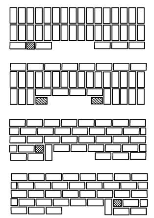
Рис. 51. Выполнение ниши в стене при многорядной системе перевязки швов
Работам, связанным с возведением кирпичных стен, мы уделили достаточно внимания. Теперь надо остановиться на кладке ограждающих конструкций из других материалов, в частности пустотелых керамических блоков, кладка которых имеет свои особенности.
При возведении стены из керамических камней размером 250 x 120 x 138 мм с семью щелевыми пустотами (их может быть и больше) необходимо соблюдать перевязку швов, как и при выполнении кладки из кирпича. В зависимости от направления пустот система перевязки меняется: при поперечных пустотах используется однорядная, при продольных – как одно-, так и многорядная система перевязки швов, при которой тычковый ряд чередуется с двумя ложковыми.
Поскольку керамические камни бывают укрупненными (288 x 138 x 138, 250 x 250 x 138 мм), при такой высоте (138 мм) выкладывать забутку обычным способом не представляется возможным. Поэтому придерживаются такого порядка работы: выкладывается наружная верста, заполняется забутка, затем осуществляется внутренняя верста. Кроме того, все элементы кладки осуществляются особым образом, благодаря которому поперечные швы целиком заполняются раствором, возрастают теплоизоляционные свойства кладки и ее прочность. Для эффективности такой работы требуется помощник. У мастера и помощника свои функции.
В порядке информирования
Преимущества, которые имеют однорядные стены, выполненные из керамических поризованных блоков, можно оценить в полной мере только в том случае, если при их укладке не нарушалась технология. Что необходимо знать, чтобы избежать ошибок при возведении стен из этого материала?
1. Основание, на которое будет уложен первый ряд поризованных блоков, обязательно должно быть абсолютно горизонтальным.
2. Поверх цоколя следует выполнить гидроизоляцию, чтобы защитить блоки от проникновения капиллярной влаги.
3. Для кладки используются два вида растворов: тяжелый, приготовленный на основе цемента или извести, и легкий (так называемый теплый), у которого благодаря высокому содержанию насыпных утеплителей (перлита, пемзы и др.) низкий коэффициент теп лопроводности. Теплый раствор готовится из сухих строительных смесей. Несмотря на то что составляет незначительную часть кладки из поризованных блоков, он позволит сделать стену с точки зрения теплопроводности более однородной. Внутренние стены могут выполняться на любом растворе.
4. Раствор для кладки должен быть средним по жесткости, иначе он заполнит пустоты блока, что недопустимо.
5. Для возведения стен из поризованных блоков лучше выбрать теплое время года, чтобы избежать введения в раствор противоморозных компонентов.
6. Первый слой раствора расстилается по гидроизоляции. При этом очень важно качественно распределить его по поверхности, так как он является выравнивающим слоем, позволяющим сгладить возможные отклонения основания от горизонтали.
7. Перед укладкой смочите блоки, чтобы они не впитывали жидкость из раствора, что негативно скажется на его качестве и прочности стены.
8. Наружные стены начните выкладывать с углов, используя только целые блоки, угловые доборные элементы и половинки.
9. Завершив ряд, проверьте его горизонтальность и исправьте обнаруженные дефекты путем постукивания резиновым молотком по поверхности блока.
10. В процессе кладки поризованных блоков раствор нужен для выполнения лишь горизонтального шва, оптимальная толщина которого 12 мм.
11. В ряду поризованные блоки скрепляются посредством системы «паз – гребень».
12. До того как вы начнете выполнять стены между углами, уложите в них не менее трех рядов, чтобы обеспечить одинаковый уровень остальных рядов в каждом из них.
13. Очередной ряд начинайте от угла.
14. По завершении каждого ряда контролируйте вертикальность кладки с помощью отвеса, горизонтальность поможет выдерживать шнур-причалка.
15. При кладке поризованных блоков необходима перевязка швов, для которой вертикальные швы в смежных рядах сдвигаются на / блока. В стенах, выполненных из целых блоков, сдвиг должен составлять, как минимум, 10 см.
16. Внутренняя несущая стена кладется одновременно с наружной. Для их соединения в каждом втором ряду блок внутренней стены должен проникать на глубину 10–15 см в наружную (здесь прокладывается утеплитель, например каменная вата, так как внутренняя стена менее термостойка), в остальных рядах обе стены соединяются раствором. Если внутренняя стена будет возводиться позже, то для соединения с наружной надо выполнить штрабы.
17. При кладке несущих стен вкладывайте в них стальные анкеры, чтобы потом прочно соединить стену с простенком.
18. Блок с отпиленной частью укладывайте как можно дальше от углов. В последующих рядах сместите вертикальный шов не менее чем на 4 см.
19. Запрещается стены из поризованных блоков комбинировать с другими материалами, обладающими большей теплопроводностью.
20. На кладку 1 м однорядной стены из поризованных блоков должно уходить не более 1 ч.
Для кладки тычковой наружной версты (рис. 52) помощник совершает следующие действия:
1) наверстывает блоки (расстояние между уже уложенным в наружную версту блоком и первым из наверстанных должно составлять, как минимум, 35–40 см) тычками на обрез стены у внутреннего края, укладывая их на ложковые грани с шагом 5–6 см друг от друга. Чтобы блоки можно было без труда брать в руки, он размещает их с небольшим свесом;
2) выполнив раскладку, помощник расстилает под наружную версту грядку раствора длиной 70–80 см, не доходя до края стены 15–20 мм.
Далее к работе подключается мастер, который:
1) разравнивает раствор, после чего, взяв рукой блок за ложковые грани, наклоняет его и одновременно Г-образно набрасывает раствор на ложковую поверхность. Помогая себе кельмой, он подносит блок к соответствующему месту;
2) повернув блок постелью вниз, прижимает его к камню, который уже занял свое место, и осаживает, нажимая на постель рукой и постукивая рукояткой кельмы;
3) таким же образом укладывает еще 2–3 блока, после чего подрезает выступивший раствор и сбрасывает его на стену.
В кладке внутренней тычковой версты (рис. 53) опять участвуют два человека. Действия помощника таковы:
1) наверстывание блоков тычками, как и при выполнении наружной версты, кроме одного момента, – блоки должны располагаться вплотную один к другому;
2) расстилание раствора грядкой для внутренней версты и на наверстанные блоки.
Мастер поступает так:
1) разравнивает раствор, наложенный под внутреннюю версту и на подготовленных блоках, потом двумя руками берет его за торцы и переносит к месту укладки;
2) почти вертикально поднимает блок и кладет его на место (чтобы раствор не успел сползти с блока, его следует повернуть только в момент укладки на постель), прижимает к уложенным блокам и осаживает рукой. При этом мастер должен переместить левую руку вверх по тычковой поверхности камня, чтобы защитить пальцы.
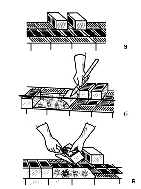
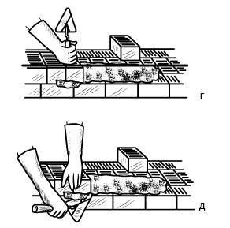
Рис. 52. Последовательность кладки наружной тычковой версты из керамических блоков: а-д – этапы работы
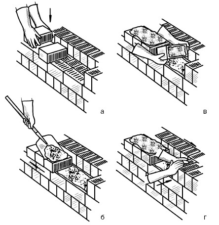
Рис. 53. Последовательность кладки внутренней тычковой версты из керамических блоков: а-г – этапы работы
При выполнении ложковой наружной версты (рис. 54) действия помощника и мастера практически повторяются, за исключением того, что первый наверстывает блоки ложками (а не тычками) на внутренней части стены, укладывая их пустотами вверх; а второй, взяв камень левой рукой за боковые грани и поднеся его к месту укладки, набрасывает раствор на тычок (а не на ложок).
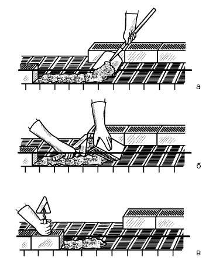
Рис. 54. Последовательность кладки наружной ложковой версты из керамических блоков: а-в – этапы работы
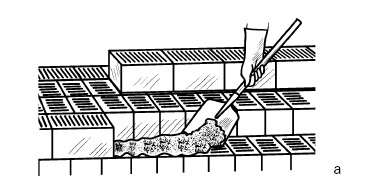
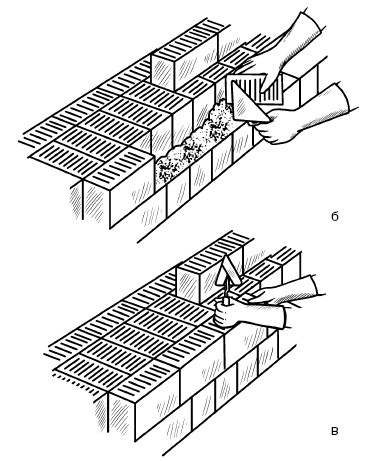
Рис. 55. Последовательность кладки внутренней ложковой версты из керамических блоков: а-в – этапы работы
Ложковая внутренняя верста выполняется после того, как будет заполнена забутка. Но, чтобы не нарушать структуру изложения, мы сначала расскажем о кладке внутренней ложковой версты (рис. 55), тем более что процесс отличается только тем, что грядка раствора под нее накладывается шириной 8–10 см.
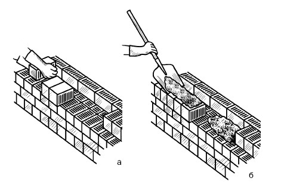
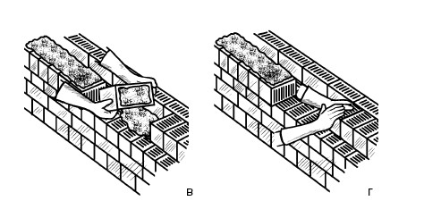
Рис. 56. Последовательность кладки забутки из керамических блоков: а-г – этапы работы
Закончив наружную версту, помощник и мастер приступают к выполнению забутки (рис. 56). При этом первый:
1) раскладывает блоки так же, как при подготовке к укладке наружной тычковой версты;
2) накладывает раствор – одну грядку между наружной верстой и наверстанными блоками, причем она должна иметь некоторое утолщение со стороны версты, необходимое для того, чтобы частично заполнить продольный вертикальный шов; вторую грядку на разложенные блоки. Второй распределяет раствор по постели и заполняет забутку, выполняя те же приемы, что и при кладке внутренней тычковой версты.
Для кладки керамических блоков используется раствор подвижностью 7–8 см. Более жидкий применять не рекомендуется, поскольку он будет стекать на лицевую поверхность стены, заполнять пустоты. А это особенно нежелательно потому, что, во-первых, потребуется больше раствора, а во-вторых (самое главное!), пострадают теплозащитные свойства стены.
Толщина горизонтальных швов должна быть в пределах 12 мм, вертикальных – 10 мм, причем их необходимо целиком заполнять раствором.
В порядке информирования
Поризованные керамические блоки Porotherm обладают пониженной теплопроводностью. Например, стена из них по теплотехническим показателям соответствует кирпичной стене толщиной до 2 м. Чтобы решить, насколько выгодно использование таких блоков для возведения стен, надо сравнивать не стоимость отдельных материалов, а то, во сколько обойдется сооружение 1 м стены, учитывая при этом затраты на материалы, оплату работы, экономию времени и пр.
Поризованные керамические блоки не предполагают дополнительного утепления; легко укладываются, не требуя применения труда высококлассных специалистов; по объему один блок заменяет 10–15 кирпичей; оснащены системой соединения «шип – паз», при которой стена собирается как конструктор, при этом число мостиков холода сокращается, количество необходимого кладочного раствора уменьшается в 3,5 раза, если сравнивать его количество с использующимся при традиционной кирпичной кладке; стоимость монтажа также обойдется примерно на 30 % дешевле. Кроме того, скорость возведения стен значительно возрастет – приблизительно в 3 раза.
Сэкономить можно и на заложении фундамента, поскольку стены из поризованных керамических блоков в 2 раза легче кирпичных.
Из поризованных блоков можно строить дома в несколько этажей. Но при этом следует помнить о необходимости устройства монолитных железобетонных поясов на уровне перекрытий.
Бетонные камни (блоки), как уже говорилось, изготавливаются из тяжелого и легкого бетона и бывают сплошными и пустотелыми. Пустотелые камни могут иметь сквозные и закрытые щелевидные пустоты.
Блоки подразделяют на основные и дополнительные. Последние по размеру равны трем четвертям и половине основного камня и предназначаются для обеспечения перевязки швов.
Стены из бетонных камней бывают разной толщины – 90, 190, 240, 290, 390 мм и более. Блоки, которые используются для кладки надземных стен, весят 14–25 кг, для стен подвалов и фундаментов – 28–32 кг. Бетонные блоки можно купить или изготовить самостоятельно. Способов, как это можно сделать, немало, мы расскажем только об одном.
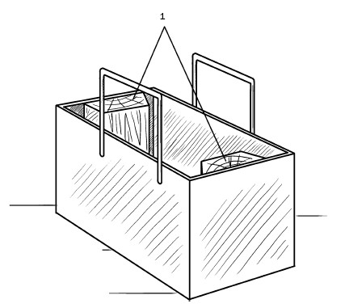
Рис. 57. Одноместная металлическая форма для изготовления полнотелых блоков: 1 – пазообразующий гребень
Необходимо изготовить металлические формы (рис. 57) без дна стандартного размера, к длинным сторонам которых привариваются ручки из прутка диаметром 8 мм и высотой в соответствии с ростом человека.
Такие ручки необходимы для того, чтобы переносить форму и осуществлять распалубку. Кроме того, форма оснащается съемными металлическими или деревянными пазообразующими гребнями. Последние обшиваются оцинкованной сталью и прикрепляются к коротким сторонам формы. Из смеси, залитой в такую форму, получается стеновой блок. Чтобы сделать угловой, необходимо извлечь один пазообразующий гребень (тогда торец блока получится ровным).
Помимо полнотелых блоков, можно изготавливать и пустотелые, для чего в конструкцию (рис. 58) следует внести некоторые изменения, в частности прикрепить к форме пустотообразователи.
Рис. 58. Одноместная форма для изготовления пустотелых блоков: 1 – пустотообразующий вкладыш
Для работы необходима пластина-пригруз, которая не только позволяет извлечь блок из формы, но и улучшает качество блоков.
Для полно– и пустотелых пластина (рис. 59) имеет разную форму.
Для полнотелых блоков пластина изготавливается из доски. Она имеет по коротким сторонам зазоры глубиной 3–4 мм, поэтому без труда входит в форму. Для полнотелых блоков пластина имеет другую конструкцию (на рис. 59 это ясно видно) и выполняется из металла.
Рис. 59. Пластина: а – для полнотелого блока; б – для пустотелого блока
После того как изготовлены формы и приготовлено исходное сырье, можно приступать к формованию блоков. Процесс осуществляется следующим образом:
1) готовится ровная площадка, которая застилается полиэтиленовой пленкой, рубероидом и даже старым линолеумом. Это нужно для того, чтобы основание блока получалось ровным, чистым;
2) форма смазывается отработанным машинным маслом, чтобы облегчить выемку блока (эта операция повторяется после каждого восьмого выполненного блока);
3) форма заполняется бетонной смесью и уплотняется;
4) когда бетон схватится (если бетонная смесь жесткая, можно не ждать), на него кладется пластина, после чего, держа за ручки, человек снимает форму с блока (рис. 60) и переставляет на другое место.
Рис. 60. Выдавливание блока из формы
Вместо одноместной формы можно изготовить форму-кассету (рис. 61), например на 10–12 блоков.
Для этого понадобятся два швеллера № 14, к нижней полке которых привариваются равнополочные уголки № 5, после чего боковые стороны формы стягиваются шпильками. Чтобы удобнее было извлекать блоки, кассета оборудуется съемными перегородками.
Рис. 61. Многоместная форма-кассета: а – фрагмент;
б – в сборе; 1 – перегородка; 2 – пустотообразующие вкладыши; 3 – швеллер; 4 – уголок; 5 – стяжная шпилька
Процесс изготовления блоков в такой форме не имеет принципиальных отличий от описанного выше, за исключением распалубки. Она начинается через 30–40 мин с извлечения пустотообразующих вкладышей, потом перегородок и заканчивается раскручиванием шпилек. Форма в разобранном виде переносится на другое место, монтируется и используется повторно.
Применяя такие нехитрые приспособления, за рабочий день можно изготовить до 100 блоков.
Бетонная смесь, которая заливается в формы, может быть разной. Для грунтобетона используется кладочный раствор М25 и 50; для наружных стен из шлако– или керамзитобетона – М50, для внутренних стен – М25 и 35, для утепления – М10; из опилкобетона – М25, 15 и 5 или 10 соответственно.
Кладка из сплошных и пустотелых бетонных блоков ведется со смещением поперечных вертикальных швов в смежных рядах на / или / камня и с соблюдением того же порядка действий, что и при кладке керамических блоков.
Рис. 62. Кладка из бетонных блоков: а – наружной ложковой версты; б – внутренней ложковой версты; в – тычкового ряда
Если блоки имеют гладкие торцовые стороны, то и сплошные, и пустотелые камни перевязываются согласно цепной системе перевязки швов (рис. 62). Толщина швов такая же, как при выполнении стен из кирпича или керамических блоков.
Кладка осуществляется мастером и помощником. Последний стоит впереди и, перемещаясь по ходу кладки, подает блоки на стену, раскладывая их с шагом, не превышающим длину одного камня, и на расстоянии от места кладки ложкового ряда, равном примерно двум длинам камня. Такая расстановка необходима для того, чтобы иметь место для расстилания кладочного раствора.
При выполнении тычкового ряда расстояние между подготовленными блоками составляет 8–10 см.
Мастер, после того как наложит на верхнюю поверхность блока две полосы раствора шириной по 6 см, берет его обеими руками и, поворачивая так, чтобы раствор не сполз, постепенно придает ему вертикальное положение и укладывает, прижимая вплотную к уложенному блоку, после чего осаживает двумя руками, срезает выступивший раствор. Чтобы заполнить поперечные швы, забрасывает их раствором.
Кладка из блоков, изготовленных из легких бетонов, с несквозными пустотами осуществляется так же, поскольку пустоты ориентируются вниз.
В ряде случаев кладка выполняется из двух различных материалов, например из кирпича и натурального камня, поэтому она получила название смешанной. При этом виде кладки очень важно, чтобы перевязка основного и облицовочного материала получилась надежной. С этой целью ложковые ряды облицовочной перевязываются с тычковыми рядами основной кладки.
При отделке бутовых стен кирпичом облицовка перевязывается, как минимум, через каждые 4–6 ложковых рядов. Осуществляется это следующим образом: сначала из бутового камня выполняется верста на противоположной кирпичной облицовке стороне, потом укладывается верста облицовки из чередующихся тычкового и ложкового рядов, одинаковая по высоте с бутовой, после чего между ними помещается камень. Далее этапы повторяются. При этом тычковые кирпичные ряды наполовину своей длины зажимаются бутовым камнем, чем и достигается перевязка швов.
Стены из легких бетонных блоков можно сложить одновременно с облицовкой их кирпичом. Сначала из кирпича выкладывается тычковый прокладный ряд, на него – первый, второй и третий ложковые облицовочные кирпичи (способом вприжим), потом ряд блоков и т. д.
Облицовка выполняется ложковыми рядами. Чтобы связать их с основным материалом, можно поступить по-разному:
1) либо через каждые 8 рядов кирпичной облицовки закладывать в швы металлические скобы;
2) либо так же через 8 рядов перевязывать облицовочную кладку с основной посредством выполнения прокладных тычковых рядов.
Чтобы 8 рядов облицовки совпадали по высоте с 3 рядами из блоков, горизонтальные швы должны иметь толщину 10 мм.
В порядке информирования
Кладка бетонных блоков (это относится и к кирпичам) требует определенных навыков и практики. Кроме того, в процессе работы у каждого мастера вырабатываются особые приемы, можно сказать, хитрости, которые помогают ему возводить стены качественно. Поделимся некоторыми из них.
1. Иногда бывает невозможно уложить целый блок по длине, поэтому его приходится уменьшать. Удобнее всего воспользоваться угловой шлифовальной машинкой, на которую установлен алмазный диск диаметром 100 мм. После того как сделан максимально глубокий пропил, надо только ударить по блоку молотком, чтобы он легко раскололся. При этом края его будут ровными. Поскольку распиливание сопровождается пылью, необходимо защитить органы дыхания респиратором, глаза очками.
2. Очень важно в работе уловить ритм: расстелить раствор, придвинуть блок, ориентируясь по шнуру, поймать правильный угол, выровнять блок относительно шнура или нижележащего блока, понять, есть ли необходимость подстучать или пододвинуть блок, и т. д. Если положить ладонь на только что уложенный блок, сразу станет ясно, вровень с соседними блоками он стоит или нет.
3. После окончания работы блоки оставляют на некоторое время в покое, потому что боковые нагрузки, возникшие сразу после кладки, нарушают связи, отчего страдает прочность стены.
4. Качественная кладка невозможна без правильно приготовленного раствора. Нужен опыт, чтобы безошибочно на глаз определять, требуется ли подлить еще воды. Оптимальный по консистенции раствор напоминает взбитое тесто. Он должен быть пластичным и в меру влажным, тогда он легко размазывается по блокам, глубоко проникает внутрь камней, крепко соединяя их. Но чересчур мокрый раствор стекает и придает кладке неряшливый вид.
5. По неопытности новички часто замешивают слишком много раствора, который не успевают использовать, и он засыхает. Лучше всего готовить такое количество раствора, чтобы его хватило примерно на час работы, причем к этому времени подготовка должна быть завершена. На 100 блоков требуется примерно три мешка цемента и 0,08 м песка.
6. Нанести раствор на торец блока можно по-разному. Одним удобнее намазывать его до подъема и укладки в версту, другим кажется, что лучше это делать на торец того блока, который уже занял свое место. Но независимо от этого набрасывать раствор надо энергично, чтобы он, ударившись о поверхность камня, прилип к нему.
7. Важно, каким инструментом вы работаете. Кельма должна удобно лежать в руке, а ее размер определяется весом порции раствора, которую вы будете на нее набирать.
При возведении стен в них необходимо предусмотреть вентиляционные и дымовые каналы, которые выполняются в процессе кладки обычно во внутренних стенах. Если их толщина составляет 380 мм, то канал устраивается в один ряд, при толщине стены 640 мм – в два ряда.
Каналы могут иметь разное сечение, но чаще всего 140 x 140 мм, т. е. / x / кирпича. Для дымоходов оставляются более крупные каналы – 270 x 140, т. е. 1 / x / либо 270 x 270 мм, т. е. 1 x 1 кирпич.
Для дымовых и вентиляционных каналов в стенах из кирпича или полно– и пустотелых бетонных блоков применяется полнотелый керамический кирпич, который перевязывается с кладкой стены (рис. 63). При этом толщина стенок и перегородок между каналами не должна быть менее / кирпича.
Каналы кладутся вертикальными с использованием того же раствора, который применяется для кладки внутренних стен.
Рис. 63. Кладка каналов в стенах: а – вентиляционного; б – дымового
Если проект предусматривает возведение столбов, то для этого используется трехрядная система перевязки швов. Как много-, так и однорядная системы перевязки швов не рекомендуются (более того, многорядная даже запрещается). Первая не обеспечивает монолитность и необходимую прочность столбов, вторая невыгодна, поскольку предполагает кладку большого количества трехчетверток.
При трехрядной системе перевязки швов (рис. 64) кладка осуществляется либо только из полномерного кирпича (при сечении столба 2 x 2; см. выше), либо из полномерного кирпича и половинок (при сечении столбов 2 x 11/2 или 2 x 21/2). При этом наружные вертикальные швы совпадают в трех рядах кладки по высоте, что в этом случае разрешается, а один тычковый ряд чередуется с тремя ложковыми.
Как было сказано выше, по трехрядной системе перевязки швов выполняются и простенки шириной не более 1 м (рис. 65). Как правило, столбы и простенки несут на себе значительную нагрузку, поэтому кладка впустошовку запрещается, возможно только неполное заполнение вертикальных швов с лицевой стороны не более чем на 10 мм. Кроме того, для кладки столбов и простенков шириной 2 / кирпича и меньше используется исключительно отборный целый кирпич.
Рис. 64. Применение трехрядной системы перевязки швов при кладке столбов сечением: а – 2 x 1 / кирпича; б – 2 x 2 / кирпича
При возведении стен возникает необходимость выполнения перемычек – так называется часть стены, которая перекрывает оконные и дверные проемы. При передаче нагрузки от перекрытий на стену непосредственно над проемом укладываются несущие сборные перемычки из железобетона. В отсутствие такой нагрузки проемы шириной до 2 м перекрываются либо железобетонными ненесущими, либо рядовыми кирпичными перемычками. Последние выполняются на растворах повышенной прочности, армируются стержнями, которые становятся опорой для кирпичей нижнего ряда.
Рис. 65. Использование трехрядной системы перевязки швов при кладке простенков сечением: а – 2 x 3 кирпича; б – 2 x 3 / кирпича
Помимо рядовых, могут выкладываться клинчатые перемычки, играющие роль архитектурных элементов фасада. Если проем составляет 3,5–4 м, то он перекрывается арочной перемычкой.
Поскольку кладка перемычек испытывает нагрузку на сжатие и изгиб, продольные и поперечные швы заполняются раствором. Если этого не сделать, вертикальные швы расшатываются, кирпичи сдвигаются, перемычка может разрушиться. Кладка ведется с помощью раствора, приготовленного только на портландцементе (использование других запрещается).
Для кладки рядовой перемычки (рис. 66) используется отборный кирпич, строго выдерживается горизонтальность рядов и обязательно соблюдаются правила перевязки швов. Высота перемычки равна 4–6 рядам, а длина на 500 мм шире проема, раствор, который при этом используется, должен иметь марку не менее 25.
Рис. 66. Выполнение рядовой перемычки: а – общий вид; б – вид в разрезе; 1 – арматура
Перед кладкой перемычки устраивается опалубка из досок толщиной 40–50 мм. На нее укладывается слой раствора толщиной 20–30 мм, в который утапливается арматура (прутки диаметром не менее 6 мм – по одному на каждые / кирпича стены (как минимум, три на перемычку)). Прутки должны на 250 мм выступать за грань проема, с тем чтобы их можно было заложить между рядами кладки, т. е. заанкерить.
Опорой для досок служат выпущенные из кладки кирпичи, которые после отвердения перемычки срубаются. При ширине проема более 1,5 м для поддержания опалубки посередине устанавливается стойка. Кроме того, опалубку можно опереть на кружала, которые изготавливаются из досок, поставленных на ребро.
Рис. 67. Выполнение клинчатой перемычки: а – плоской; б – лучковой; 1 – направление опорной плоскости; 2 – замковый кирпич
Для клинчатых перемычек (рис. 67), которые бывают плоскими и с подъемом (лучковыми), используется полнотелый керамический или силикатный кирпич. Его укладывают с клинообразными швами, ширина которых неодинакова внизу и вверху – не менее 5 и не более 25 мм соответственно.
Прежде чем приступить к кладке перемычек, до их уровня возводятся стены. Одновременно выкладывается опорная пята из подтесанного кирпича (угол ее отклонения по вертикали определяется по направлению опорной плоскости). Кладка осуществляется поперечными рядами с предварительной установкой опалубки и кружал.
Количество кирпичей должно быть нечетным. Они размечаются на опалубке с учетом растворных швов. Кладка ведется с обеих сторон, в середине заклинивается центральным нечетным кирпичом, который называется замковым. Во избежание отклонений от вертикальной плоскости натягивается шнур, он фиксируется в точке пересечения сопрягающихся линий пят.
Если ширина пролета составляет более 2 м, запрещается выкладывать клинчатые перемычки.
В таких случаях, как более прочные, возводятся арочные (рис. 68). Так называется перемычка, если радиус, которым она вычерчивается, по величине близок к половине пролета перемычки.
Рис. 68. Выполнение арочной перемычки (размеры указаны в миллиметрах): 1 – кирпичи перемычки; 2 – замковый кирпич; 3 – шов; 4 – кружало
Порядок выполнения арочной перемычки (в том числе арок, арочных сводов) не отличается от последовательности действий при возведении клинчатой, т. е. по опалубке соответствующей формы, в направлении от пят к центру и одновременно с двух сторон. При этом между швами, расширенными сверху и зауженными внизу (если используется лекальный кирпич, торцы которого различаются по ширине, то швы будут одинаковыми по толщине), кривой линией, которая образует нижнюю поверхность арочной перемычки, и наружной поверхностью кладки должно быть строго по 90°. Для прочности швы кладки заполняются раствором целиком.
Расположение рядов кладки и постелей, которые укладываются между ними, определяется первым правилом разрезки, поскольку в таких конструкциях усилие от нагрузки направлено по касательной к кривой арки и постели рядов перпендикулярны вектору давлений.
Направление радиальных швов и правильность кладки контролируются шнуром, который закрепляется в центре арки. Положение каждого ряда проверяется шнуром и шаблоном-угольником, очертания одной из сторон которого совпадают с кривизной арки.
Конструкция опалубки должна быть такой, чтобы при разборке она равномерно опускалась. Для обеспечения этого подставьте под кружала клинья. Потом при постепенном их ослаблении опалубка мягко опустится.
Нагружать арки разрешается не менее чем через неделю после завершения работ по ее возведению, если при этом температура воздуха выше 10 °C. При других показаниях термометра это срок может быть увеличен в 1,5–2 раза.
В порядке информирования
Экологически чистыми являются стены, сложенные из саманных блоков, которые изготавливаются из смеси глины, песка и волокнистых наполнителей (соломы и т. п.), соединенных, например, в такой пропорции: песок, жирная глина (1: 4–5) и 15–20 г сухой соломенной сечки на 1 м смеси.
Такой материал приемлем там, где глина является местным сырьем. Чтобы резко улучшить качество, ее рекомендуется проморозить. Для этого глина заготавливается осенью, ссыпается в виде вала высотой до 1 м и оставляется под открытым небом. Благодаря тому что она пропитывается осадками и промерзает, происходит ее разрыхление.
С наступлением сезона можно приступать к изготовлению саманных блоков. Процесс состоит из следу ющих этапов: приготовление смеси, формовка, сушка и укладка блоков в штабеля. Самым трудоемким будет первый этап, поскольку предполагается перемешать глину с песком, потом ввести солому и вымесить полученное тесто. Блоки формуются в деревянных ящиках без дна. Поскольку материал подвержен усушке, внутренний размер формы должен быть больше, чем размер блока. Обычно блоки имеют размер 330 x 160 x 120 мм, значит, размер формы 357 x 173 x 130 мм. Чтобы не возникло проблем с выемкой блоков из формы, последняя внизу делается шире на 2–3 мм. Кроме того, перед использованием она окунается в емкость с водой и изнутри присыпается песком или мякиной.
Далее берется порция сырья и с силой бросается в форму (она должна быть заполнена целиком), потом масса уминается, а излишек удаляется, после чего форма снимается, а сырой блок остается для сушки на 2–3 дня. Потом готовые блоки складываются в штабель (расстояние между рядами 15 см, между блоками 5 см) и оставляются на 1–2 недели (в зависимости от погоды). Чтобы определить, достаточно ли блок просох, его надо разрезать. Если на разрезе блок, взятый из середины штабеля, однородно окрашен, то он готов к применению.
Стены можно поднимать только из хорошо просушенных целых блоков. Кладка такая же, как и для кирпичной стены, т. е. необходимо соблюдать перевязку швов, их толщина не должна превышать 10 мм (в качестве раствора используется та же смесь, что и для блоков).
Правильно изготовленные блоки не имеют трещин, не разрушаются при падении с высоты 2 м, в течение 24 ч не размокают, будучи погруженными в воду. Блоки можно распиливать, отесывать, вбивать в них гвозди. Конечно, есть некоторые ограничения: во-первых, длина стен без внутренних промежуточных не должна быть больше двадцатикратной толщины стены; во-вторых, стену под подоконниками надо усиливать 2–3 жердями диаметром 3–4 см, чтобы предотвратить трещинообразование и выпучивание блоков под нагрузкой; в-третьих, свесы крыши должны быть увеличены и иметь размер не менее 60 см, по фронтонам скатных крыш – как минимум, 30 см.
Готовая постройка оставляется примерно на год для осадки, потом отделывается: штукатурится известково-глиняным раствором по колышкам длиной 7 см, вбитым на 5 см в шахматном порядке с шагом 10–15 см. В доме со стенами из самана летом прохладно, зимой тепло. Стены «дышат», обеспечивая нормальный воздухообмен.
Для усиления кирпичной кладки (стен, столбов, простенков) применяется армирование конструкции. Металлические прутки закладываются в швы между рядами. В дальнейшем под воздействием нагрузки арматура зажимается в швах и вследствие сил трения и адгезии с раствором она образует с кладкой единое целое.
Армирование бывает:
1) поперечное;
2) продольное;
3) вертикальное.
Для поперечного армирования применяются сетка или стержни. При сжатии кладки под воздействием нагрузок стальные стержни (их диаметр должен быть не менее 2 мм, но не более 8 мм) принимают на себя поперечные растягивающие усилия, чем предотвращают разрушение кладки при изгибе и растяжении и таким образом способствуют увеличению несущей способности сжатого элемента конструкции.
Арматура, которой усиливаются столбы, стенки и простенки, может иметь прямоугольную (диаметр не более 5 мм) или зигзагообразную (диаметр не более 8 мм) форму. Ограничение по диаметру вполне понятно, так как его увеличение могло привести к возрастанию толщины горизонтальных швов, что негативно отразилось бы на прочности кладки.
Для предотвращения коррозии арматурная сетка с обеих сторон прикрыта слоем раствора толщиной не менее 2 мм, при этом прутки, из которых она состоит, размещающиеся с шагом не менее 30 и не более 120 мм, свариваются или скрепляются вязальной проволокой. Вместо сетки запрещается укладывать отдельные стержни, даже если они относительно друг друга находятся под углом 90°. Для подтверждения того, что стена, столб или простенок армированы, концы прутков, из которых изготовлена сетка, должны выступать с какой-либо стороны кладки на 2–3 мм.
Прямоугольные сетки размещаются через 5 рядов кладки (не реже), при утолщенном кирпиче – через каждые 4 ряда, а зигзагообразные – попарно в смежных рядах, причем направление прутков должно быть взаимно перпендикулярным.
Для повышения устойчивости тонких стен, перегородок и столбов при воздействии «растягивающих усилий в изгибаемых и внецентренно сжатых конструкциях» применяется продольное и вертикальное армирование. В большей степени оно показано при строительстве в сейсмоопасных зонах.
Когда строительство ведется на грунтах, склонных к неравномерной осадке, или если новые стены примыкают к старым, возникает необходимость в устройстве осадочных швов (рис. 69), которые разделят постройку на части по длине и предупредят разрушение всей конструкции.
Рис. 69. Выполнение осадочного шва: а – вид в разрезе; б – план стены; в – план фундамента; 1 – фундамент; 2 – стена; 3 – шов фундамента; 4 – шов стены; 5 – зазор для осадки; 6 – шпунт
Осадочные швы пронизывают постройку от карниза до подошвы фундамента. Швы в стенах и фундаменте отличаются друг от друга тем, что первые выполняются в виде шпунта толщиной / кирпича, вторые – без. Осадочный шов по всей высоте изолируется 2–3 слоями толя стеклоткани и пр. Низ стены и верх фундамента разграничены пустым пространством в 1–2 кирпича, которое компенсирует осадку и не позволит возникнуть трещинам. Чтобы швы были герметичными, они заполняются просмоленной паклей (законопачиваются). При устройстве осадочных швов необходимо предупредить проникновение через них воды в подвальное помещение. С этой целью с наружной его стороны выполняется глиняный замок.
Предназначение температурных швов состоит в том, что они предупреждают трещинообразование при колебаниях температуры в разных частях постройки. Температурные швы, как и осадочные, имеют вид шпунта, но отличаются от последних тем, что устраиваются только в надземной части здания.
Чтобы ограждающая конструкция из кирпича обеспечивала необходимую тепловую защиту помещений, она должна иметь ширину 640 мм, т. е. выполняться в 2 / кирпича. Стены такой толщины достаточно массивны и обходятся дорого. Поэтому поиск более оптимальных вариантов не прекращается до сих пор. Один из способов – вести кладку из легких каменных материалов (пустотелый и поризованный кирпич, керамические пустотелые камни, блоки из легких бетонов и др.). Кроме того, уменьшить толщину стен и одновременно повысить теплоизоляционные свойства можно посредством применения облегченных стеновых конструкций, в которых вместо части кирпича (камней) используются воздушные прослойки, различные засыпки и пр. При этом экономится кирпич, уменьшается масса строения.
Чаще всего возводятся кирпичные стены с горизонтальными кирпичными диафрагмами, применяется колодцевая кладка. Встречаются облегченная кирпичная кладка, которая отделывается теплоизоляционными плитами, кладки с уширенными швами, на теплых растворах, изготовленных на основе перлитового, шлакового песка и т. д. Благодаря таким растворам (особенно в случае выполнения кладки с уширенными продольными вертикальными швами) толщина стены может быть существенно уменьшена, поскольку их теплостойкость значительно повышается.
Представляем несколько вариантов облегченной кладки стен.
Облегченная кирпично-бетонная кладка (рис. 70) – это конструкция из двух стенок толщиной в / кирпича, пространство между которыми заполняется легким бетоном.
Рис. 70. Выполнение облегченно-кирпичной кладки (размеры указаны в миллиметрах): а – при размещении тычковых рядов в одной плоскости; б – при расположении тычковых рядов вразбежку; 1 – тычковые ряды; 2 – ложковые ряды; 3 – легкий бетон
Чтобы связать стенки, выполняются тычковые ряды (диафрагмы), которые углубляются в бетон на / кирпича и выкладываются через каждые 3–5 ложковых рядов. Диафрагмы допускается располагать в одной плоскости или вразбежку, что определяется толщиной стены – 380–680 мм.
Продольные стены можно связывать и по-другому – отдельными кирпичами, которые при этом необходимо выкладывать в продольных стенках тычковыми рядами через каждые 2 ряда по высоте и не реже чем через 2 кирпича, размещенных ложками по длине продольных стенок.
Такой способ кладки используется при строительстве зданий высотой не более четырех этажей. При этом применяются легкие бетоны М10 и ниже, которые производятся на местных вяжущих (портландцемент не применяется).
В процессе кладки таких стен работы ведутся ярусами, высота которых зависит от расположения тычковых рядов. Если они находятся в одной плоскости, то кладка выполняется с тычкового ряда. Потом наружная верста поднимается на высоту двух ложковых рядов, внутренняя верста доводится до такой же высоты, зазор между ними заполняется легким бетоном. Далее кладется тычковый ряд, и кладка продолжается в указанной последовательности.
При размещении тычковых рядов вразбежку порядок работ иной, завершив который, кладка ведется в том же порядке:
1) наружная тычковая верста;
2) внутренняя ложковая верста;
3) 2 наружных и 2 внутренних ложковых ряда;
4) легкий бетон, которым заливается образовавшееся пространство;
5) наружная ложковая верста;
6) внутренняя ложковая верста, причем первый ряд тычковый, следующие два ложковые.
В порядке информирования
Чтобы кладка шла не только качественно, но и быстро, необходимо правильно организовать рабочее место (в длину оно занимает примерно 2,5 м). Обычно выделяются участки в виде свободной полосы, где работает мастер, и зоны, где размещаются строительные материалы. При выполнении кирпичной стены стопки кирпича или поддоны с ним удобнее расставлять по линии работ вперемешку с емкостями для раствора (оптимально, если расстояние между последними равно 3–3,5 м), запас кирпича должен быть таким, чтобы его хватило на 2–4 ч. При этом не следует перегружать рабочую зону, тем более когда работа будет вестись на подмостях или лесах.
Если кладка осуществляется без облицовки, то материалы (кирпич и раствор) расставляются в один ряд; при одновременно выполняющейся облицовке – в два ряда (в первом основной материал, во втором облицовочный).
Если кладку стен после закладки фундамента можно вести, стоя на земле, то, когда высота стены достигнет 120 см, это будет уже проблематично. Поэтому рабочее место необходимо переместить на подмости, представляющие собой настил на опорах, которые обязательно оснащаются приставными лестницами и ограждениями.
Леса – это система стоечных опор, к которым крепятся перемещающиеся (через 1 м) рабочие площадки. Леса устанавливаются, когда высота постройки достигает 5 м.
Облегченная колодцевая кладка (рис. 71) тоже представляет собой конструкцию из двух продольных стенок толщиной в / кирпича, расстояние между которыми составляет 140–340 мм. Для связи между ними с шагом 650–1200 мм по длине выполняются поперечные стенки толщиной в / кирпича.
Поперечные и продольные стенки связываются через каждый ряд по высоте. При этом образуются колодцы, которые можно заполнить различными материалами: легким бетоном, керамзитом, щебнем, шлаком и др. Если толщина стены не кратна / кирпича, то поперечные стенки выполняются с уширенными швами (рис. 72).
Рис. 71. Выполнение облегченной колодцевой кладки (размеры указаны в миллиметрах): а – фрагмент кладки; 1–4 – ряды кладки; 5 – поперечная стенка; 6 – раскладка кирпича на стене; 7 – заполненный колодец; 8 – растворная постель; б – кладка угла; 1 – продольные стенки; 2 – поперечные стенки; 3 – легкий бетон или засыпка; 4 – пробка
Чтобы не допустить оседания термоизолирующей засыпки, она производится слоями толщиной 100–150 мм, при этом каждый из них поливается раствором через каждые 100–500 мм и утрамбовывается. Кроме того, могут быть предусмотрены армированные прутками или скобами растворные диафрагмы (рис. 73). Жесткость контура кладки позволяет делать термоизолирующую засыпку после того, как подняты 5 рядов стенки, т. е. работы можно вести ярусами.
Рис. 72. Кладка поперечной стенки с уширенными швами (размеры указаны в миллиметрах)
Кирпичную кладку отличает значительная тепловая инерционность. Это означает, что стена из кирпича требует достаточного времени для прогревания, но и остывает она так же медленно. Если говорить о доме для постоянного проживания, то это качество кирпича можно расценивать как положительное, поскольку внутренние помещения, как правило, не испытывают серьезных температурных колебаний. Что касается домов временного проживания – в них эту особенность кирпича скорее можно отнести к негативным. Когда хозяева отсутствуют, температура стен настолько снижается, что для их прогревания необходимо довольно много времени и энергии (топлива). Именно для таких случаев (хотя и не только, так как подобные конструкции используются и при постройке жилых домов), помогающих смягчить это отрицательное явление, стены возводятся в виде многослойных конструкций, структуру которых образуют слои, разные по теплопроводности и тепловой инерционности.
Рис. 73. Кладка с растворными диафрагмами, армированными прутками (размеры указаны в миллиметрах): 1 – продольная стенка; 2 – утеплитель; 3 – армированная диафрагма
Система, в которой кирпич играет роль облицовки, называется многослойной. Она представлена двумя разновидностями. В первой облицовка из кирпича представляет собой самонесущий слой, который не предназначен для восприятия нагрузки, оказываемой перекрытиями и кровлей (рис. 74).
Рис. 74. Стена в виде многослойной конструкции: 1 – кирпичная облицовка; 2 – вентиляционный зазор; 3 – ветрозащита; 4 – слой теплоизоляции; 5 – несущая стена
Основная нагрузка приходится на несущую стену, которая традиционно возводится из полнотелого кирпича, блоков, керамзитобетона и пр. На нее монтируется слой теплоизоляции, после которой следует облицовочный слой.
Для прочности слои скрепляются гибкими Z-образными связями из нержавеющей или оцинкованной стали. Кроме того, несущая и облицовочная стены на уровне перекрытий объединяются железобетонным поясом.
При второй разновидности несущая и облицовочная стены жестко связаны и воспринимают нагрузку от вышележащих конструкций. Обычно несущая стена выполняется из кирпича или блоков, изготовленных по различным технологиям.
Многослойные системы имеют целый ряд преимуществ:
1) защищают стены от сменяющихся циклов замораживания и оттаивания;
2) сглаживают температурные колебания основной ограждающей конструкции;
3) увеличивают долговечность стен;
4) смещают точку росы в сторону наружного теплоизоляционного слоя, что обеспечивает паропроницаемость стен, не уменьшает площадь внутренних помещений, позволяет применять различные конструкции для оформления фасада.
В порядке информирования
При выполнении кладки, как и при других работах, необходимо соблюдать технику безопасности.
1. Все инструменты должны использоваться только по своему прямому назначению. Перед началом работы они проверяются на предмет исправности, поскольку инструмент должен быть прочно насажен на рукоятки, рабочие поверхности должны быть ровными, без зазоров и заусенцев. Сломанным инструментом пользоваться запрещается.
2. При кладке руки должны быть защищены рукавицами.
3. Подмости и леса надо устанавливать на ровные, хорошо утрамбованные площадки (на покрытый снегом или льдом грунт стойки лесов ставить нельзя). Крепления следует проверять.
4. Леса и подмости во избежание их обрушения нельзя перегружать строительными материалами, кроме того, не нужно концентрировать их в одном месте, поскольку они не должны создавать препятствий для перемещения.
5. Настилы для лесов и подмостей не должны иметь щелей.
6. Промежуток между лесами и постройкой должен составлять не более 5 см (этого вполне достаточно, чтобы с помощью отвеса проверить вертикальность кладки).
7. При перемонтировании лесов стена должна находиться на 70 см выше уровня настила, иначе мастер должен работать в предохранительном поясе.
8. На лесах и подмостях нельзя оставлять инструменты, мусор и пр.
9. Расшивка швов осуществляется по окончании каждого ряда с подмостей или междуэтажного перекрытия – на стене находиться нельзя.
Помимо кирпича, в качестве строительного материала используется и натуральный камень (известняк, ракушечник, туф, песчаник, гранит). Каменные стены отличаются прочностью, долговечностью и обходятся достаточно дешево там, где этот материал является местным. Поскольку камень холодный, то из него обычно возводятся хозяйственные постройки, хотя при необходимости теплопроводность таких стен можно понизить, отделав их изнутри теплоизоляционными плитами, например пенобетонными, гипсокартонными и др. Для усиления эффекта сторону плит, ориентированную к кладке, можно дополнительно обшить, например, алюминиевой фольгой. Наружные стены в таких случаях оштукатуриваются.
Камни имеют правильную и неправильную форму. Кладка из камней второго вида называется бутовой. Перед началом работы следует все рассортировать, выяснив соотношение камней той и другой формы, а также количество крупных и мелких экземпляров. Для работы надо подбирать примерно одинаковые по высоте камни и не более 300 мм, с двумя (желательно параллельными) постелями. Вес бутового камня, применяющегося в строительстве, обычно составляет не более 30 кг. Экземпляры, имеющие большую массу, раскалывают (процесс называется плинтовкой). Вместе с плинтовкой также стесывают острые углы, стараясь придать форму, близкую к параллелепипеду.
В процессе кладки надо совмещать камни, различные по величине и форме, так как это позволит выложить равномерный рисунок (разумеется, и времени для этого потребуется больше). При кладке следует располагать материал так, чтобы верхние грани камня либо были горизонтальными, либо имели некоторый уклон к середине стены.
Как и кирпичная, бутовая кладка осуществляется с перевязкой швов на цементно-известковом растворе подвижностью 4–6 см.
В процессе кладки камни подбираются и подгоняются таким образом, чтобы по высоте ряды были примерно одинаковыми – 20–25 см и чтобы можно было выдерживать горизонтальность швов. Для достижения этого в одном ряду встречаются 2–3 тонких камня, нередко крупные камни входят в смежные ряды, над несколькими мелкими камнями надо положить большой, чтобы поддержать перевязку швов.
Сначала более крупные (маячные) камни, у которых смежные грани перпендикулярны друг другу, кладутся по углам, на пересечениях и примерно через 4–5 м на протяженных участках стены, из них же выполняются и версты. С обеих сторон маячных камней натягивается шнур-причалка. Для прочности камни первого ряда утрамбовываются в грунт выкопанной траншеи. По ее краям поднимаются внутренняя и наружная версты, камни для которых подбираются по высоте. Сначала они выкладываются насухо, чтобы для каждого подобрать наиболее устойчивое положение. Потом под них накладывается раствор толщиной 25 мм, и камень осаживается. Чтобы повысить прочность кладки, периодически следует выполнять горизонтальные «стяжки», т. е. перпендикулярно стене класть крупные камни, которые свяжут наружную и внутреннюю версты.
Промежуток между верстами заполняется раствором (его должно быть достаточно для того, чтобы излишек выдавливался в швы между отдельными камнями).
Требования к камням забутки менее строгие, они могут иметь любую форму и размер. Но при этом необходимо следить, чтобы камни не касались друг друга без прослойки раствора (это негативно сказывается на прочности кладки), не качались, нужно осаживать их молотком. Работа по заполнению забутки завершается расщебенкой, при которой в раствор погружаются мелкие камни и щебень. После этого поверхность ряда выравнивается, при необходимости добавляется раствор в возникшие углубления между камнями.
Остальные ряды кладутся в таком же порядке и с соблюдением перевязки швов.
Через 30–40 мин после окончания кладки швы расшиваются, и для очередного ряда снова устанавливаются угловые камни, между которыми вкладываются штыри для крепления шнура-причалки. Если нижняя поверхность камня не отличается особой ровностью, то под него следует подложить прокладку, которая придаст ему устойчивое положение (после того как раствор схватится, ее надо вынуть, а открывшуюся полость заполнить свежим раствором). Иногда камень не удается зафиксировать прокладкой. В таком случае его можно подпереть бруском (100 x 50 мм), установленным под небольшим углом к стене.
Достигнуть такой тщательной перевязки, как при кирпичной кладке, конечно, невозможно. Но тем не менее необходимо стараться подбирать камни для верст и забутки так, чтобы можно было поочередно класть камни то длинными сторонами (ложками), то короткими (тычками), в смежных рядах над ложковыми размещать тычковые камни, и наоборот (рис. 75), обеспечивая тем самым перевязку швов, аналогичную той, которая создается при цепной системе.
Рис. 75. Перевязка швов при кладке из бутового камня: а – стен; 1 – ложок; 2 – тычок; б – пересечения стен; в – углов
Для усиления декоративности стен применяется циклопическая кладка (рис. 76), при которой для наружной версты подбираются камни и выкладываются так, чтобы швы между ними образовывали рисунок.
Рис. 76. Фрагмент циклопической кладки
Для оформления дверных и оконных проемов подбираются камни более правильной формы (при необходимости внешние плоскости можно подтесать), или бутовая кладка совмещается с кирпичной (кирпичи перевязываются с бутом). В этом случае и перемычка должна быть кирпичной. В остальных применяются железобетонные или деревянные перемычки.
Чтобы уменьшить толщину каменной стены, довести ее до наименьшей толщины 400 мм (это существенно сократит финансовые, трудовые, временные расходы) и при этом значительно улучшить теплотехнические свойства, целесообразно отделать ее современными теплоизоляционными материалами с внутренней или внешней стороны.
Из известняка, туфа и других мягких пород (плотность не более 1800 кг/м ) выпиливаются камни правильной формы. В них не должно быть трещин, прослоек глины и других дефектов. В зависимости от точности размеров, качества углов и ребер камни подразделяются на первый и второй сорт. Первосортные используются для лицевой кладки и облицовки.
В порядке информирования
Как вариант, может использоваться комбинированная «наливная» стена. Она не менее прочная, чем чисто каменная, но требует меньше времени для возведения и является менее трудоемкой. Чтобы внешний вид стены был более красивым, наружную версту нужно выложить из камня, а потом с внутренней стороны устанавливать опалубку (ее лучше сделать скользящей) и залить бетонную смесь из раствора и щебня, взятых в равной пропорции. Поскольку изнутри стена получается ровной, ее будет легче обшить каким-либо стеновым материалом, например сосновыми панелями, гипсокартоном и др. Для усиления прочности через каждые 2–3 ряда надо устанавливать стяжные камни, глубоко утапливая их в раствор. Для опалубки подойдут бруски сечением 50 x 100 мм и доски толщиной 25 мм, которые сшиваются в виде панелей размером 600 x 2400 мм. Внизу и вверху в них необходимо просверлить отверстия диаметром 20 мм, причем верхние и нижние должны совпадать по вертикали. При использовании таких панелей стена толщиной 350 мм будет возведена в пять этапов. Кроме того, понадобятся болты диаметром 16 мм и длиной 230 мм.
Весь процесс осуществляется следующим образом.
1. Сначала выкладывается из камней наружная верста высотой, которая немного превышает высоту панели (600 мм).
2. Когда раствор схватится (для стяжки стены с бетоном между камнями надо проложить проволоку и анкерные связи из гофрированного металла длиной 80 мм (через каждые 60 см по горизонтали и 30 см по вертикали), потом с шагом 90 см установить арматурные прутки диаметром 13 мм), с внутренней стороны устанавливаются панели опалубки (их вертикальность контролируется отвесом), которые стягиваются болтами и подпираются подкосами из брусков сечением 50 x 100 мм.
3. В образовавшийся промежуток заливается раствор. Когда его уровень достигнет верхних отверстий в панелях, в них нужно вложить болты, залить оставшийся раствор в виде бетонной подушки и выложить несколько рядов камней наружной версты.
4. Как только бетон схватится, нужно перевесить панели, надев их нижними отверстиями на вставленные вверху болты.
5. Далее все действия повторяются. До стены высотой 3000 мм понадобилось 5 заливок и 150 болтов, торчащие концы которых необходимо срезать заподлицо с внутренней стороны по окончании строительства.
Для наглядности описанный процесс представлен на рис. 77, 78.
Рис. 78. Стена (вид в разрезе): 1 – бетонная подушка; 2 – литая стена; 3 – анкерная связь; 4 – каменная кладка; 5 – стяжные камни